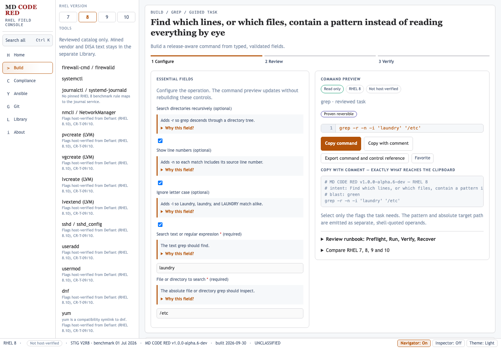
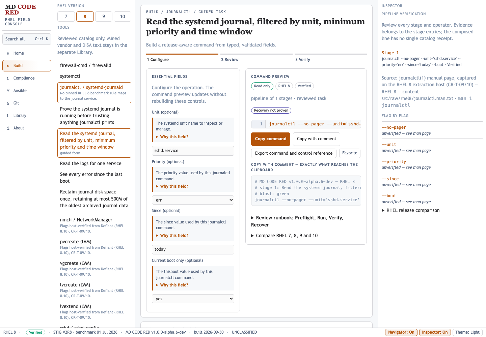

Decision and traceability
This report reruns the complete alpha.6 functional audit after the fixes in commit 3057052ed473586a119af175309d553c791d584d. It preserves the original HOLD report as the baseline and records the clean post-fix result in the machine-readable regression record.
Artifact: dist/md-code-red_v1.0.0-alpha.6-dev.html
SHA-256: 1b5419d6b2b47bcbd63e3b714e619faebe5c720a10da84b2e7f635454abe2abc
Content fingerprint: 4ef609cbdc1b2befb193c077b4332464c7a0d7cd55f6ddba57f265b859894f2f
The functional release gate is cleared. Live assistive-technology sessions and any release-candidate environment checks remain separate validation activities; they do not represent a known functional defect in this build.
Defect closure
| Finding | Implemented repair | Closure evidence |
|---|---|---|
DEF-MDCR-001Previously Critical | Pipeline inspector renderer crash Pipeline results now take a stage-oriented inspector path before catalog-entry lookup. The inspector reports stage verification, source, flags, and release comparison. | CLOSED TC-PIPE-001, TC-PIPE-002, TC-PIPE-003, TC-PIPE-004, TC-CONSOLE-001, TC-PIPELINE-REGRESSION-001 |
DEF-MDCR-002Previously Major | Fixed examples where user-specific values should be editable All 14 affected recipes are guided generators with validated fields, exact golden commands, instructional metadata, and release-aware rendering. Grep now exposes three flags, pattern, and target. | CLOSED TC-TASK-GREP-001, TC-PARAM-*, TC-MATRIX-*, TC-FILE-REGRESSION-001 |
DEF-MDCR-003Previously Major | Test-plan safety and validation facts were stale The test plan now lists the seven red-rated entries, current generator/static split, pipeline coverage, receipt progress, and current validation totals. | CLOSED TC-DOCS-001 |
DEF-MDCR-004Previously Minor | Architecture validation totals were stale The architecture guide now reports 419 unit tests and 128,449 hostile-input checks. | CLOSED TC-DOCS-002 |
Visual evidence


grep -r -n -i 'laundry' '/etc' from five visible controls, loaded zero network resources, and had no horizontal overflow.

Release gates
| Gate | Result | Evidence |
|---|---|---|
| Full rendered browser audit | PASS | 867/867 assertions; zero runtime exceptions and zero console errors |
| Repository QA gate | PASS | Q1–Q26 and JavaScript syntax |
| Python unit suite | PASS | 419 tests |
| Hostile-input harness | PASS | 128,449 checks; zero failures |
| Diff hygiene | PASS | git diff --check |
Rendered-browser coverage
The audit exercised all 200 entries over RHEL 7, 8, 9, and 10: 800 entry/release cases, plus navigation, search, copy, evidence, storage, reference acknowledgement, pipeline composition, generated files, invalid inputs, Home routes, and five responsive widths.
| Area | Assertions | Result |
|---|---|---|
| Accessibility | 1 | PASS |
| Boot | 1 | PASS |
| Clipboard | 2 | PASS |
| Controls | 1 | PASS |
| Documentation | 2 | PASS |
| Entry matrix | 800 | PASS |
| Evidence | 2 | PASS |
| Generated files | 1 | PASS |
| Home | 1 | PASS |
| Keyboard | 1 | PASS |
| Layout | 1 | PASS |
| Navigation | 7 | PASS |
| Performance | 2 | PASS |
| Pipeline | 4 | PASS |
| Reference | 6 | PASS |
| Reliability | 1 | PASS |
| Responsive | 10 | PASS |
| Search | 6 | PASS |
| State | 2 | PASS |
| Task completion | 15 | PASS |
| Validation | 1 | PASS |
Complete assertion record
Show all 867 rendered-browser assertions
| ID | Area | Description | Result | Observed |
|---|---|---|---|---|
TC-BOOT-001 | Boot | App opens to task-centered Home | PASS | {"title":"MD CODE RED v1.0.0-alpha.6-dev","h1":1,"home":"What do you need to do?","rail":"favorites","scripts":6,"islands":5,"scrollWidth":1440,"innerWidth":1440} |
TC-A11Y-001 | Accessibility | Exactly one h1 is exposed | PASS | 1 |
TC-LAYOUT-001 | Layout | Desktop boot has no horizontal overflow | PASS | 1440/1440 |
TC-PERF-001 | Performance | Initial page navigation and render | PASS | 1210 ms |
TC-RAIL-FAVORITES | Navigation | favorites rail opens the expected workspace | PASS | What do you need to do? |
TC-RAIL-BUILDER | Navigation | builder rail opens the expected workspace | PASS | No command selected |
TC-RAIL-ANSIBLE | Navigation | ansible rail opens the expected workspace | PASS | No command selected |
TC-RAIL-GIT | Navigation | git rail opens the expected workspace | PASS | No command selected |
TC-RAIL-REFERENCE | Navigation | reference rail opens the expected workspace | PASS | No command selected |
TC-RAIL-ABOUT | Navigation | about rail opens the expected workspace | PASS | About MD CODE RED |
TC-RAIL-STIG | Navigation | Compliance opens a STIG-filtered search dialog | PASS | {"open":true,"value":"STIG","expanded":"true"} |
TC-MATRIX-001 | Entry matrix | firewalld-service-active renders through its UI on RHEL 7 | PASS | systemctl status firewalld |
TC-MATRIX-002 | Entry matrix | firewalld-service-active renders through its UI on RHEL 8 | PASS | systemctl is-active firewalld |
TC-MATRIX-003 | Entry matrix | firewalld-service-active renders through its UI on RHEL 9 | PASS | systemctl is-active firewalld |
TC-MATRIX-004 | Entry matrix | firewalld-service-active renders through its UI on RHEL 10 | PASS | systemctl is-active firewalld |
TC-MATRIX-005 | Entry matrix | ctrl-alt-del-target-masked renders through its UI on RHEL 7 | PASS | systemctl status ctrl-alt-del.target |
TC-MATRIX-006 | Entry matrix | ctrl-alt-del-target-masked renders through its UI on RHEL 8 | PASS | systemctl status ctrl-alt-del.target |
TC-MATRIX-007 | Entry matrix | ctrl-alt-del-target-masked renders through its UI on RHEL 9 | PASS | systemctl status ctrl-alt-del.target |
TC-MATRIX-008 | Entry matrix | ctrl-alt-del-target-masked renders through its UI on RHEL 10 | PASS | systemctl status ctrl-alt-del.target |
TC-MATRIX-009 | Entry matrix | journald-service-active renders through its UI on RHEL 7 | PASS | systemctl is-active systemd-journald |
TC-MATRIX-010 | Entry matrix | journald-service-active renders through its UI on RHEL 8 | PASS | systemctl is-active systemd-journald |
TC-MATRIX-011 | Entry matrix | journald-service-active renders through its UI on RHEL 9 | PASS | systemctl is-active systemd-journald |
TC-MATRIX-012 | Entry matrix | journald-service-active renders through its UI on RHEL 10 | PASS | systemctl is-active systemd-journald |
TC-MATRIX-013 | Entry matrix | gen-fw-set-default-zone renders through its UI on RHEL 7 | PASS | firewall-cmd --set-default-zone='public' |
TC-MATRIX-014 | Entry matrix | gen-fw-set-default-zone renders through its UI on RHEL 8 | PASS | firewall-cmd --set-default-zone='public' |
TC-MATRIX-015 | Entry matrix | gen-fw-set-default-zone renders through its UI on RHEL 9 | PASS | firewall-cmd --set-default-zone='public' |
TC-MATRIX-016 | Entry matrix | gen-fw-set-default-zone renders through its UI on RHEL 10 | PASS | firewall-cmd --set-default-zone='public' |
TC-MATRIX-017 | Entry matrix | gen-fw-open-port renders through its UI on RHEL 7 | PASS | firewall-cmd --zone='public' --permanent --add-rich-rule='rule family="ipv4" source address="10.1.0.0/16" port port="8443" protocol="tcp" accept' |
TC-MATRIX-018 | Entry matrix | gen-fw-open-port renders through its UI on RHEL 8 | PASS | firewall-cmd --zone='public' --permanent --add-rich-rule='rule family="ipv4" source address="10.1.0.0/16" port port="8443" protocol="tcp" accept' |
TC-MATRIX-019 | Entry matrix | gen-fw-open-port renders through its UI on RHEL 9 | PASS | firewall-cmd --zone='public' --permanent --add-rich-rule='rule family="ipv4" source address="10.1.0.0/16" port port="8443" protocol="tcp" accept' |
TC-MATRIX-020 | Entry matrix | gen-fw-open-port renders through its UI on RHEL 10 | PASS | firewall-cmd --zone='public' --permanent --add-rich-rule='rule family="ipv4" source address="10.1.0.0/16" port port="8443" protocol="tcp" accept' |
TC-MATRIX-021 | Entry matrix | gen-fw-allow-service renders through its UI on RHEL 7 | PASS | firewall-cmd --zone='public' --permanent --add-rich-rule='rule family="ipv4" source address="10.1.0.0/16" service name="ssh" accept' |
TC-MATRIX-022 | Entry matrix | gen-fw-allow-service renders through its UI on RHEL 8 | PASS | firewall-cmd --zone='public' --permanent --add-rich-rule='rule family="ipv4" source address="10.1.0.0/16" service name="ssh" accept' |
TC-MATRIX-023 | Entry matrix | gen-fw-allow-service renders through its UI on RHEL 9 | PASS | firewall-cmd --zone='public' --permanent --add-rich-rule='rule family="ipv4" source address="10.1.0.0/16" service name="ssh" accept' |
TC-MATRIX-024 | Entry matrix | gen-fw-allow-service renders through its UI on RHEL 10 | PASS | firewall-cmd --zone='public' --permanent --add-rich-rule='rule family="ipv4" source address="10.1.0.0/16" service name="ssh" accept' |
TC-MATRIX-025 | Entry matrix | gen-nmcli-static-ipv4 renders through its UI on RHEL 7 | PASS | nmcli connection modify 'lab-eth0' connection.interface-name 'eth0' ipv4.addresses '192.168.1.50/24' ipv4.gateway '192.168.1.1' ipv4.method manual |
TC-MATRIX-026 | Entry matrix | gen-nmcli-static-ipv4 renders through its UI on RHEL 8 | PASS | nmcli connection modify 'lab-eth0' connection.interface-name 'eth0' ipv4.addresses '192.168.1.50/24' ipv4.gateway '192.168.1.1' ipv4.method manual |
TC-MATRIX-027 | Entry matrix | gen-nmcli-static-ipv4 renders through its UI on RHEL 9 | PASS | nmcli connection modify 'lab-eth0' connection.interface-name 'eth0' ipv4.addresses '192.168.1.50/24' ipv4.gateway '192.168.1.1' ipv4.method manual |
TC-MATRIX-028 | Entry matrix | gen-nmcli-static-ipv4 renders through its UI on RHEL 10 | PASS | nmcli connection modify 'lab-eth0' connection.interface-name 'eth0' ipv4.addresses '192.168.1.50/24' ipv4.gateway '192.168.1.1' ipv4.method manual |
TC-MATRIX-029 | Entry matrix | gen-journalctl-unit-logs renders through its UI on RHEL 7 | PASS | journalctl --no-pager --unit='sshd.service' --priority='err' --since='today' --boot |
TC-MATRIX-030 | Entry matrix | gen-journalctl-unit-logs renders through its UI on RHEL 8 | PASS | journalctl --no-pager --unit='sshd.service' --priority='err' --since='today' --boot |
TC-MATRIX-031 | Entry matrix | gen-journalctl-unit-logs renders through its UI on RHEL 9 | PASS | journalctl --no-pager --unit='sshd.service' --priority='err' --since='today' --boot |
TC-MATRIX-032 | Entry matrix | gen-journalctl-unit-logs renders through its UI on RHEL 10 | PASS | journalctl --no-pager --unit='sshd.service' --priority='err' --since='today' --boot |
TC-MATRIX-033 | Entry matrix | gen-lsblk-inspect-storage renders through its UI on RHEL 7 | PASS | lsblk -o 'NAME,TYPE,FSTYPE,SIZE,MOUNTPOINT' |
TC-MATRIX-034 | Entry matrix | gen-lsblk-inspect-storage renders through its UI on RHEL 8 | PASS | lsblk -o 'NAME,TYPE,FSTYPE,SIZE,MOUNTPOINT' |
TC-MATRIX-035 | Entry matrix | gen-lsblk-inspect-storage renders through its UI on RHEL 9 | PASS | lsblk -o 'NAME,TYPE,FSTYPE,SIZE,MOUNTPOINT' |
TC-MATRIX-036 | Entry matrix | gen-lsblk-inspect-storage renders through its UI on RHEL 10 | PASS | lsblk -o 'NAME,TYPE,FSTYPE,SIZE,MOUNTPOINT' |
TC-MATRIX-037 | Entry matrix | gen-pvcreate-initialize renders through its UI on RHEL 7 | PASS | pvcreate '/dev/sdb' |
TC-MATRIX-038 | Entry matrix | gen-pvcreate-initialize renders through its UI on RHEL 8 | PASS | pvcreate '/dev/sdb' |
TC-MATRIX-039 | Entry matrix | gen-pvcreate-initialize renders through its UI on RHEL 9 | PASS | pvcreate '/dev/sdb' |
TC-MATRIX-040 | Entry matrix | gen-pvcreate-initialize renders through its UI on RHEL 10 | PASS | pvcreate '/dev/sdb' |
TC-MATRIX-041 | Entry matrix | gen-vgcreate-new-vg renders through its UI on RHEL 7 | PASS | vgcreate 'vgdata' '/dev/sdb' |
TC-MATRIX-042 | Entry matrix | gen-vgcreate-new-vg renders through its UI on RHEL 8 | PASS | vgcreate 'vgdata' '/dev/sdb' |
TC-MATRIX-043 | Entry matrix | gen-vgcreate-new-vg renders through its UI on RHEL 9 | PASS | vgcreate 'vgdata' '/dev/sdb' |
TC-MATRIX-044 | Entry matrix | gen-vgcreate-new-vg renders through its UI on RHEL 10 | PASS | vgcreate 'vgdata' '/dev/sdb' |
TC-MATRIX-045 | Entry matrix | gen-lvcreate-new-lv renders through its UI on RHEL 7 | PASS | lvcreate -L '10G' -n 'lv0' 'vg0' |
TC-MATRIX-046 | Entry matrix | gen-lvcreate-new-lv renders through its UI on RHEL 8 | PASS | lvcreate -L '10G' -n 'lv0' 'vg0' |
TC-MATRIX-047 | Entry matrix | gen-lvcreate-new-lv renders through its UI on RHEL 9 | PASS | lvcreate -L '10G' -n 'lv0' 'vg0' |
TC-MATRIX-048 | Entry matrix | gen-lvcreate-new-lv renders through its UI on RHEL 10 | PASS | lvcreate -L '10G' -n 'lv0' 'vg0' |
TC-MATRIX-049 | Entry matrix | gen-lvextend-grow renders through its UI on RHEL 7 | PASS | lvextend -L '+10G' -r '/dev/vg0/lv0' |
TC-MATRIX-050 | Entry matrix | gen-lvextend-grow renders through its UI on RHEL 8 | PASS | lvextend -L '+10G' -r '/dev/vg0/lv0' |
TC-MATRIX-051 | Entry matrix | gen-lvextend-grow renders through its UI on RHEL 9 | PASS | lvextend -L '+10G' -r '/dev/vg0/lv0' |
TC-MATRIX-052 | Entry matrix | gen-lvextend-grow renders through its UI on RHEL 10 | PASS | lvextend -L '+10G' -r '/dev/vg0/lv0' |
TC-MATRIX-053 | Entry matrix | gen-sshd-test-config renders through its UI on RHEL 7 | PASS | sshd -T -f '/etc/ssh/sshd_config' |
TC-MATRIX-054 | Entry matrix | gen-sshd-test-config renders through its UI on RHEL 8 | PASS | sshd -T -f '/etc/ssh/sshd_config' |
TC-MATRIX-055 | Entry matrix | gen-sshd-test-config renders through its UI on RHEL 9 | PASS | sshd -T -f '/etc/ssh/sshd_config' |
TC-MATRIX-056 | Entry matrix | gen-sshd-test-config renders through its UI on RHEL 10 | PASS | sshd -T -f '/etc/ssh/sshd_config' |
TC-MATRIX-057 | Entry matrix | gen-useradd-create renders through its UI on RHEL 7 | PASS | useradd -m -c 'RFC-1234' -G 'wheel' -s '/bin/bash' 'svcacct' |
TC-MATRIX-058 | Entry matrix | gen-useradd-create renders through its UI on RHEL 8 | PASS | useradd -m -c 'RFC-1234' -G 'wheel' -s '/bin/bash' 'svcacct' |
TC-MATRIX-059 | Entry matrix | gen-useradd-create renders through its UI on RHEL 9 | PASS | useradd -m -c 'RFC-1234' -G 'wheel' -s '/bin/bash' 'svcacct' |
TC-MATRIX-060 | Entry matrix | gen-useradd-create renders through its UI on RHEL 10 | PASS | useradd -m -c 'RFC-1234' -G 'wheel' -s '/bin/bash' 'svcacct' |
TC-MATRIX-061 | Entry matrix | gen-usermod-add-group renders through its UI on RHEL 7 | PASS | usermod -a -G 'wheel' 'svcacct' |
TC-MATRIX-062 | Entry matrix | gen-usermod-add-group renders through its UI on RHEL 8 | PASS | usermod -a -G 'wheel' 'svcacct' |
TC-MATRIX-063 | Entry matrix | gen-usermod-add-group renders through its UI on RHEL 9 | PASS | usermod -a -G 'wheel' 'svcacct' |
TC-MATRIX-064 | Entry matrix | gen-usermod-add-group renders through its UI on RHEL 10 | PASS | usermod -a -G 'wheel' 'svcacct' |
TC-MATRIX-065 | Entry matrix | gen-systemctl-query renders through its UI on RHEL 7 | PASS | systemctl 'status' 'sshd.service' |
TC-MATRIX-066 | Entry matrix | gen-systemctl-query renders through its UI on RHEL 8 | PASS | systemctl 'status' 'sshd.service' |
TC-MATRIX-067 | Entry matrix | gen-systemctl-query renders through its UI on RHEL 9 | PASS | systemctl 'status' 'sshd.service' |
TC-MATRIX-068 | Entry matrix | gen-systemctl-query renders through its UI on RHEL 10 | PASS | systemctl 'status' 'sshd.service' |
TC-MATRIX-069 | Entry matrix | gen-systemctl-manage renders through its UI on RHEL 7 | PASS | systemctl 'start' 'sshd.service' |
TC-MATRIX-070 | Entry matrix | gen-systemctl-manage renders through its UI on RHEL 8 | PASS | systemctl 'start' 'sshd.service' |
TC-MATRIX-071 | Entry matrix | gen-systemctl-manage renders through its UI on RHEL 9 | PASS | systemctl 'start' 'sshd.service' |
TC-MATRIX-072 | Entry matrix | gen-systemctl-manage renders through its UI on RHEL 10 | PASS | systemctl 'start' 'sshd.service' |
TC-MATRIX-073 | Entry matrix | gen-dnf-package is visibly gated with its tool on RHEL 7 | PASS | disabled tool row |
TC-MATRIX-074 | Entry matrix | gen-dnf-package renders through its UI on RHEL 8 | PASS | dnf 'install' 'firewalld' |
TC-MATRIX-075 | Entry matrix | gen-dnf-package renders through its UI on RHEL 9 | PASS | dnf 'install' 'firewalld' |
TC-MATRIX-076 | Entry matrix | gen-dnf-package renders through its UI on RHEL 10 | PASS | dnf 'install' 'firewalld' |
TC-MATRIX-077 | Entry matrix | gen-yum-package renders through its UI on RHEL 7 | PASS | yum 'install' 'firewalld' |
TC-MATRIX-078 | Entry matrix | gen-yum-package renders through its UI on RHEL 8 | PASS | yum 'install' 'firewalld' |
TC-MATRIX-079 | Entry matrix | gen-yum-package renders through its UI on RHEL 9 | PASS | yum 'install' 'firewalld' |
TC-MATRIX-080 | Entry matrix | gen-yum-package renders through its UI on RHEL 10 | PASS | yum 'install' 'firewalld' |
TC-MATRIX-081 | Entry matrix | gen-setsebool-set renders through its UI on RHEL 7 | PASS | setsebool -P 'httpd_can_network_connect' 'on' |
TC-MATRIX-082 | Entry matrix | gen-setsebool-set renders through its UI on RHEL 8 | PASS | setsebool -P 'httpd_can_network_connect' 'on' |
TC-MATRIX-083 | Entry matrix | gen-setsebool-set renders through its UI on RHEL 9 | PASS | setsebool -P 'httpd_can_network_connect' 'on' |
TC-MATRIX-084 | Entry matrix | gen-setsebool-set renders through its UI on RHEL 10 | PASS | setsebool -P 'httpd_can_network_connect' 'on' |
TC-MATRIX-085 | Entry matrix | gen-semanage-port-add renders through its UI on RHEL 7 | PASS | semanage port -a -t 'http_port_t' -p 'tcp' '8443' |
TC-MATRIX-086 | Entry matrix | gen-semanage-port-add renders through its UI on RHEL 8 | PASS | semanage port -a -t 'http_port_t' -p 'tcp' '8443' |
TC-MATRIX-087 | Entry matrix | gen-semanage-port-add renders through its UI on RHEL 9 | PASS | semanage port -a -t 'http_port_t' -p 'tcp' '8443' |
TC-MATRIX-088 | Entry matrix | gen-semanage-port-add renders through its UI on RHEL 10 | PASS | semanage port -a -t 'http_port_t' -p 'tcp' '8443' |
TC-MATRIX-089 | Entry matrix | gen-chage-list renders through its UI on RHEL 7 | PASS | chage -l 'adm-linux' |
TC-MATRIX-090 | Entry matrix | gen-chage-list renders through its UI on RHEL 8 | PASS | chage -l 'adm-linux' |
TC-MATRIX-091 | Entry matrix | gen-chage-list renders through its UI on RHEL 9 | PASS | chage -l 'adm-linux' |
TC-MATRIX-092 | Entry matrix | gen-chage-list renders through its UI on RHEL 10 | PASS | chage -l 'adm-linux' |
TC-MATRIX-093 | Entry matrix | gen-chage-set-aging renders through its UI on RHEL 7 | PASS | chage -M '60' -m '7' -W '14' 'svcacct' |
TC-MATRIX-094 | Entry matrix | gen-chage-set-aging renders through its UI on RHEL 8 | PASS | chage -M '60' -m '7' -W '14' 'svcacct' |
TC-MATRIX-095 | Entry matrix | gen-chage-set-aging renders through its UI on RHEL 9 | PASS | chage -M '60' -m '7' -W '14' 'svcacct' |
TC-MATRIX-096 | Entry matrix | gen-chage-set-aging renders through its UI on RHEL 10 | PASS | chage -M '60' -m '7' -W '14' 'svcacct' |
TC-MATRIX-097 | Entry matrix | gen-auditctl-watch renders through its UI on RHEL 7 | PASS | auditctl -w '/etc/motd' -p 'r' -k 'identity' |
TC-MATRIX-098 | Entry matrix | gen-auditctl-watch renders through its UI on RHEL 8 | PASS | auditctl -w '/etc/motd' -p 'r' -k 'identity' |
TC-MATRIX-099 | Entry matrix | gen-auditctl-watch renders through its UI on RHEL 9 | PASS | auditctl -w '/etc/motd' -p 'r' -k 'identity' |
TC-MATRIX-100 | Entry matrix | gen-auditctl-watch renders through its UI on RHEL 10 | PASS | auditctl -w '/etc/motd' -p 'r' -k 'identity' |
TC-MATRIX-101 | Entry matrix | gen-ausearch-by-key renders through its UI on RHEL 7 | PASS | ausearch -k 'identity' -ts 'today' |
TC-MATRIX-102 | Entry matrix | gen-ausearch-by-key renders through its UI on RHEL 8 | PASS | ausearch -k 'identity' -ts 'today' |
TC-MATRIX-103 | Entry matrix | gen-ausearch-by-key renders through its UI on RHEL 9 | PASS | ausearch -k 'identity' -ts 'today' |
TC-MATRIX-104 | Entry matrix | gen-ausearch-by-key renders through its UI on RHEL 10 | PASS | ausearch -k 'identity' -ts 'today' |
TC-MATRIX-105 | Entry matrix | gen-rsyslogd-test-config renders through its UI on RHEL 7 | PASS | rsyslogd -N1 -f '/etc/rsyslog.conf' |
TC-MATRIX-106 | Entry matrix | gen-rsyslogd-test-config renders through its UI on RHEL 8 | PASS | rsyslogd -N1 -f '/etc/rsyslog.conf' |
TC-MATRIX-107 | Entry matrix | gen-rsyslogd-test-config renders through its UI on RHEL 9 | PASS | rsyslogd -N1 -f '/etc/rsyslog.conf' |
TC-MATRIX-108 | Entry matrix | gen-rsyslogd-test-config renders through its UI on RHEL 10 | PASS | rsyslogd -N1 -f '/etc/rsyslog.conf' |
TC-MATRIX-109 | Entry matrix | gen-chronyd-one-shot-check renders through its UI on RHEL 7 | PASS | chronyd -Q 'server time.mil iburst' |
TC-MATRIX-110 | Entry matrix | gen-chronyd-one-shot-check renders through its UI on RHEL 8 | PASS | chronyd -Q 'server time.mil iburst' |
TC-MATRIX-111 | Entry matrix | gen-chronyd-one-shot-check renders through its UI on RHEL 9 | PASS | chronyd -Q 'server time.mil iburst' |
TC-MATRIX-112 | Entry matrix | gen-chronyd-one-shot-check renders through its UI on RHEL 10 | PASS | chronyd -Q 'server time.mil iburst' |
TC-MATRIX-113 | Entry matrix | gen-podman-ps is visibly gated with its tool on RHEL 7 | PASS | disabled tool row |
TC-MATRIX-114 | Entry matrix | gen-podman-ps renders through its UI on RHEL 8 | PASS | podman ps -a |
TC-MATRIX-115 | Entry matrix | gen-podman-ps renders through its UI on RHEL 9 | PASS | podman ps -a |
TC-MATRIX-116 | Entry matrix | gen-podman-ps renders through its UI on RHEL 10 | PASS | podman ps -a |
TC-MATRIX-117 | Entry matrix | gen-podman-stop is visibly gated with its tool on RHEL 7 | PASS | disabled tool row |
TC-MATRIX-118 | Entry matrix | gen-podman-stop renders through its UI on RHEL 8 | PASS | podman stop 'web01' |
TC-MATRIX-119 | Entry matrix | gen-podman-stop renders through its UI on RHEL 9 | PASS | podman stop 'web01' |
TC-MATRIX-120 | Entry matrix | gen-podman-stop renders through its UI on RHEL 10 | PASS | podman stop 'web01' |
TC-MATRIX-121 | Entry matrix | ls-listing renders through its UI on RHEL 7 | PASS | ls -la /etc |
TC-MATRIX-122 | Entry matrix | ls-listing renders through its UI on RHEL 8 | PASS | ls -la /etc |
TC-MATRIX-123 | Entry matrix | ls-listing renders through its UI on RHEL 9 | PASS | ls -la /etc |
TC-MATRIX-124 | Entry matrix | ls-listing renders through its UI on RHEL 10 | PASS | ls -la /etc |
TC-MATRIX-125 | Entry matrix | cd-change-directory renders through its UI on RHEL 7 | PASS | cd /var/log |
TC-MATRIX-126 | Entry matrix | cd-change-directory renders through its UI on RHEL 8 | PASS | cd /var/log |
TC-MATRIX-127 | Entry matrix | cd-change-directory renders through its UI on RHEL 9 | PASS | cd /var/log |
TC-MATRIX-128 | Entry matrix | cd-change-directory renders through its UI on RHEL 10 | PASS | cd /var/log |
TC-MATRIX-129 | Entry matrix | pushd-popd-directory-stack renders through its UI on RHEL 7 | PASS | pushd /var/log && tail -n 20 messages ; popd |
TC-MATRIX-130 | Entry matrix | pushd-popd-directory-stack renders through its UI on RHEL 8 | PASS | pushd /var/log && tail -n 20 messages ; popd |
TC-MATRIX-131 | Entry matrix | pushd-popd-directory-stack renders through its UI on RHEL 9 | PASS | pushd /var/log && tail -n 20 messages ; popd |
TC-MATRIX-132 | Entry matrix | pushd-popd-directory-stack renders through its UI on RHEL 10 | PASS | pushd /var/log && tail -n 20 messages ; popd |
TC-MATRIX-133 | Entry matrix | pwd-print-working-directory renders through its UI on RHEL 7 | PASS | pwd -P |
TC-MATRIX-134 | Entry matrix | pwd-print-working-directory renders through its UI on RHEL 8 | PASS | pwd -P |
TC-MATRIX-135 | Entry matrix | pwd-print-working-directory renders through its UI on RHEL 9 | PASS | pwd -P |
TC-MATRIX-136 | Entry matrix | pwd-print-working-directory renders through its UI on RHEL 10 | PASS | pwd -P |
TC-MATRIX-137 | Entry matrix | cat-print-file renders through its UI on RHEL 7 | PASS | cat -n /etc/hosts |
TC-MATRIX-138 | Entry matrix | cat-print-file renders through its UI on RHEL 8 | PASS | cat -n /etc/hosts |
TC-MATRIX-139 | Entry matrix | cat-print-file renders through its UI on RHEL 9 | PASS | cat -n /etc/hosts |
TC-MATRIX-140 | Entry matrix | cat-print-file renders through its UI on RHEL 10 | PASS | cat -n /etc/hosts |
TC-MATRIX-141 | Entry matrix | less-page-file renders through its UI on RHEL 7 | PASS | less /var/log/messages |
TC-MATRIX-142 | Entry matrix | less-page-file renders through its UI on RHEL 8 | PASS | less /var/log/messages |
TC-MATRIX-143 | Entry matrix | less-page-file renders through its UI on RHEL 9 | PASS | less /var/log/messages |
TC-MATRIX-144 | Entry matrix | less-page-file renders through its UI on RHEL 10 | PASS | less /var/log/messages |
TC-MATRIX-145 | Entry matrix | head-first-lines renders through its UI on RHEL 7 | PASS | head -n 50 /var/log/messages |
TC-MATRIX-146 | Entry matrix | head-first-lines renders through its UI on RHEL 8 | PASS | head -n 50 /var/log/messages |
TC-MATRIX-147 | Entry matrix | head-first-lines renders through its UI on RHEL 9 | PASS | head -n 50 /var/log/messages |
TC-MATRIX-148 | Entry matrix | head-first-lines renders through its UI on RHEL 10 | PASS | head -n 50 /var/log/messages |
TC-MATRIX-149 | Entry matrix | tail-last-lines-follow renders through its UI on RHEL 7 | PASS | tail -f -n 50 /var/log/messages |
TC-MATRIX-150 | Entry matrix | tail-last-lines-follow renders through its UI on RHEL 8 | PASS | tail -f -n 50 /var/log/messages |
TC-MATRIX-151 | Entry matrix | tail-last-lines-follow renders through its UI on RHEL 9 | PASS | tail -f -n 50 /var/log/messages |
TC-MATRIX-152 | Entry matrix | tail-last-lines-follow renders through its UI on RHEL 10 | PASS | tail -f -n 50 /var/log/messages |
TC-MATRIX-153 | Entry matrix | which-locate-binary renders through its UI on RHEL 7 | PASS | which -a systemctl |
TC-MATRIX-154 | Entry matrix | which-locate-binary renders through its UI on RHEL 8 | PASS | which -a systemctl |
TC-MATRIX-155 | Entry matrix | which-locate-binary renders through its UI on RHEL 9 | PASS | which -a systemctl |
TC-MATRIX-156 | Entry matrix | which-locate-binary renders through its UI on RHEL 10 | PASS | which -a systemctl |
TC-MATRIX-157 | Entry matrix | type-classify-command renders through its UI on RHEL 7 | PASS | type -a cd |
TC-MATRIX-158 | Entry matrix | type-classify-command renders through its UI on RHEL 8 | PASS | type -a cd |
TC-MATRIX-159 | Entry matrix | type-classify-command renders through its UI on RHEL 9 | PASS | type -a cd |
TC-MATRIX-160 | Entry matrix | type-classify-command renders through its UI on RHEL 10 | PASS | type -a cd |
TC-MATRIX-161 | Entry matrix | man-manual-page renders through its UI on RHEL 7 | PASS | man 5 sshd_config |
TC-MATRIX-162 | Entry matrix | man-manual-page renders through its UI on RHEL 8 | PASS | man 5 sshd_config |
TC-MATRIX-163 | Entry matrix | man-manual-page renders through its UI on RHEL 9 | PASS | man 5 sshd_config |
TC-MATRIX-164 | Entry matrix | man-manual-page renders through its UI on RHEL 10 | PASS | man 5 sshd_config |
TC-MATRIX-165 | Entry matrix | history-shell-history renders through its UI on RHEL 7 | PASS | history 20 |
TC-MATRIX-166 | Entry matrix | history-shell-history renders through its UI on RHEL 8 | PASS | history 20 |
TC-MATRIX-167 | Entry matrix | history-shell-history renders through its UI on RHEL 9 | PASS | history 20 |
TC-MATRIX-168 | Entry matrix | history-shell-history renders through its UI on RHEL 10 | PASS | history 20 |
TC-MATRIX-169 | Entry matrix | umask-default-permissions renders through its UI on RHEL 7 | PASS | umask |
TC-MATRIX-170 | Entry matrix | umask-default-permissions renders through its UI on RHEL 8 | PASS | umask |
TC-MATRIX-171 | Entry matrix | umask-default-permissions renders through its UI on RHEL 9 | PASS | umask |
TC-MATRIX-172 | Entry matrix | umask-default-permissions renders through its UI on RHEL 10 | PASS | umask |
TC-MATRIX-173 | Entry matrix | id-show-identity renders through its UI on RHEL 7 | PASS | id -a |
TC-MATRIX-174 | Entry matrix | id-show-identity renders through its UI on RHEL 8 | PASS | id -a |
TC-MATRIX-175 | Entry matrix | id-show-identity renders through its UI on RHEL 9 | PASS | id -a |
TC-MATRIX-176 | Entry matrix | id-show-identity renders through its UI on RHEL 10 | PASS | id -a |
TC-MATRIX-177 | Entry matrix | who-logged-in-users renders through its UI on RHEL 7 | PASS | who -a |
TC-MATRIX-178 | Entry matrix | who-logged-in-users renders through its UI on RHEL 8 | PASS | who -a |
TC-MATRIX-179 | Entry matrix | who-logged-in-users renders through its UI on RHEL 9 | PASS | who -a |
TC-MATRIX-180 | Entry matrix | who-logged-in-users renders through its UI on RHEL 10 | PASS | who -a |
TC-MATRIX-181 | Entry matrix | w-logged-in-activity renders through its UI on RHEL 7 | PASS | w |
TC-MATRIX-182 | Entry matrix | w-logged-in-activity renders through its UI on RHEL 8 | PASS | w |
TC-MATRIX-183 | Entry matrix | w-logged-in-activity renders through its UI on RHEL 9 | PASS | w |
TC-MATRIX-184 | Entry matrix | w-logged-in-activity renders through its UI on RHEL 10 | PASS | w |
TC-MATRIX-185 | Entry matrix | last-login-history renders through its UI on RHEL 7 | PASS | last -F -n 25 |
TC-MATRIX-186 | Entry matrix | last-login-history renders through its UI on RHEL 8 | PASS | last -F -n 25 |
TC-MATRIX-187 | Entry matrix | last-login-history renders through its UI on RHEL 9 | PASS | last -F -n 25 |
TC-MATRIX-188 | Entry matrix | last-login-history renders through its UI on RHEL 10 | PASS | last -F -n 25 |
TC-MATRIX-189 | Entry matrix | su-switch-user renders through its UI on RHEL 7 | PASS | su - |
TC-MATRIX-190 | Entry matrix | su-switch-user renders through its UI on RHEL 8 | PASS | su - |
TC-MATRIX-191 | Entry matrix | su-switch-user renders through its UI on RHEL 9 | PASS | su - |
TC-MATRIX-192 | Entry matrix | su-switch-user renders through its UI on RHEL 10 | PASS | su - |
TC-MATRIX-193 | Entry matrix | sudo-run-as-another-user renders through its UI on RHEL 7 | PASS | sudo -l |
TC-MATRIX-194 | Entry matrix | sudo-run-as-another-user renders through its UI on RHEL 8 | PASS | sudo -l |
TC-MATRIX-195 | Entry matrix | sudo-run-as-another-user renders through its UI on RHEL 9 | PASS | sudo -l |
TC-MATRIX-196 | Entry matrix | sudo-run-as-another-user renders through its UI on RHEL 10 | PASS | sudo -l |
TC-MATRIX-197 | Entry matrix | env-show-environment renders through its UI on RHEL 7 | PASS | env | sort |
TC-MATRIX-198 | Entry matrix | env-show-environment renders through its UI on RHEL 8 | PASS | env | sort |
TC-MATRIX-199 | Entry matrix | env-show-environment renders through its UI on RHEL 9 | PASS | env | sort |
TC-MATRIX-200 | Entry matrix | env-show-environment renders through its UI on RHEL 10 | PASS | env | sort |
TC-MATRIX-201 | Entry matrix | export-shell-variable renders through its UI on RHEL 7 | PASS | export 'EDITOR' |
TC-MATRIX-202 | Entry matrix | export-shell-variable renders through its UI on RHEL 8 | PASS | export 'EDITOR' |
TC-MATRIX-203 | Entry matrix | export-shell-variable renders through its UI on RHEL 9 | PASS | export 'EDITOR' |
TC-MATRIX-204 | Entry matrix | export-shell-variable renders through its UI on RHEL 10 | PASS | export 'EDITOR' |
TC-MATRIX-205 | Entry matrix | grep-search-text renders through its UI on RHEL 7 | PASS | grep -r -n -i 'laundry' '/etc' |
TC-MATRIX-206 | Entry matrix | grep-search-text renders through its UI on RHEL 8 | PASS | grep -r -n -i 'laundry' '/etc' |
TC-MATRIX-207 | Entry matrix | grep-search-text renders through its UI on RHEL 9 | PASS | grep -r -n -i 'laundry' '/etc' |
TC-MATRIX-208 | Entry matrix | grep-search-text renders through its UI on RHEL 10 | PASS | grep -r -n -i 'laundry' '/etc' |
TC-MATRIX-209 | Entry matrix | sed-substitute renders through its UI on RHEL 7 | PASS | sed -i.bak 's/old/new/g' /etc/hosts |
TC-MATRIX-210 | Entry matrix | sed-substitute renders through its UI on RHEL 8 | PASS | sed -i.bak 's/old/new/g' /etc/hosts |
TC-MATRIX-211 | Entry matrix | sed-substitute renders through its UI on RHEL 9 | PASS | sed -i.bak 's/old/new/g' /etc/hosts |
TC-MATRIX-212 | Entry matrix | sed-substitute renders through its UI on RHEL 10 | PASS | sed -i.bak 's/old/new/g' /etc/hosts |
TC-MATRIX-213 | Entry matrix | awk-fields renders through its UI on RHEL 7 | PASS | awk -F: '$3 >= 1000 {print $1, $3}' /etc/passwd |
TC-MATRIX-214 | Entry matrix | awk-fields renders through its UI on RHEL 8 | PASS | awk -F: '$3 >= 1000 {print $1, $3}' /etc/passwd |
TC-MATRIX-215 | Entry matrix | awk-fields renders through its UI on RHEL 9 | PASS | awk -F: '$3 >= 1000 {print $1, $3}' /etc/passwd |
TC-MATRIX-216 | Entry matrix | awk-fields renders through its UI on RHEL 10 | PASS | awk -F: '$3 >= 1000 {print $1, $3}' /etc/passwd |
TC-MATRIX-217 | Entry matrix | sort-lines renders through its UI on RHEL 7 | PASS | sort -k2,2 -n /var/log/sizes.txt |
TC-MATRIX-218 | Entry matrix | sort-lines renders through its UI on RHEL 8 | PASS | sort -k2,2 -n /var/log/sizes.txt |
TC-MATRIX-219 | Entry matrix | sort-lines renders through its UI on RHEL 9 | PASS | sort -k2,2 -n /var/log/sizes.txt |
TC-MATRIX-220 | Entry matrix | sort-lines renders through its UI on RHEL 10 | PASS | sort -k2,2 -n /var/log/sizes.txt |
TC-MATRIX-221 | Entry matrix | uniq-dedupe-adjacent renders through its UI on RHEL 7 | PASS | uniq -c sorted-access.log |
TC-MATRIX-222 | Entry matrix | uniq-dedupe-adjacent renders through its UI on RHEL 8 | PASS | uniq -c sorted-access.log |
TC-MATRIX-223 | Entry matrix | uniq-dedupe-adjacent renders through its UI on RHEL 9 | PASS | uniq -c sorted-access.log |
TC-MATRIX-224 | Entry matrix | uniq-dedupe-adjacent renders through its UI on RHEL 10 | PASS | uniq -c sorted-access.log |
TC-MATRIX-225 | Entry matrix | wc-count renders through its UI on RHEL 7 | PASS | wc -l /var/log/messages |
TC-MATRIX-226 | Entry matrix | wc-count renders through its UI on RHEL 8 | PASS | wc -l /var/log/messages |
TC-MATRIX-227 | Entry matrix | wc-count renders through its UI on RHEL 9 | PASS | wc -l /var/log/messages |
TC-MATRIX-228 | Entry matrix | wc-count renders through its UI on RHEL 10 | PASS | wc -l /var/log/messages |
TC-MATRIX-229 | Entry matrix | cut-extract-columns renders through its UI on RHEL 7 | PASS | cut -d: -f1,3 /etc/passwd |
TC-MATRIX-230 | Entry matrix | cut-extract-columns renders through its UI on RHEL 8 | PASS | cut -d: -f1,3 /etc/passwd |
TC-MATRIX-231 | Entry matrix | cut-extract-columns renders through its UI on RHEL 9 | PASS | cut -d: -f1,3 /etc/passwd |
TC-MATRIX-232 | Entry matrix | cut-extract-columns renders through its UI on RHEL 10 | PASS | cut -d: -f1,3 /etc/passwd |
TC-MATRIX-233 | Entry matrix | tr-translate-characters renders through its UI on RHEL 7 | PASS | tr -d '\r' |
TC-MATRIX-234 | Entry matrix | tr-translate-characters renders through its UI on RHEL 8 | PASS | tr -d '\r' |
TC-MATRIX-235 | Entry matrix | tr-translate-characters renders through its UI on RHEL 9 | PASS | tr -d '\r' |
TC-MATRIX-236 | Entry matrix | tr-translate-characters renders through its UI on RHEL 10 | PASS | tr -d '\r' |
TC-MATRIX-237 | Entry matrix | diff-compare-files renders through its UI on RHEL 7 | PASS | diff -u old.conf new.conf |
TC-MATRIX-238 | Entry matrix | diff-compare-files renders through its UI on RHEL 8 | PASS | diff -u old.conf new.conf |
TC-MATRIX-239 | Entry matrix | diff-compare-files renders through its UI on RHEL 9 | PASS | diff -u old.conf new.conf |
TC-MATRIX-240 | Entry matrix | diff-compare-files renders through its UI on RHEL 10 | PASS | diff -u old.conf new.conf |
TC-MATRIX-241 | Entry matrix | find-search-filesystem renders through its UI on RHEL 7 | PASS | find /var/log -name "*.log" -type f -mtime +30 -size +10M |
TC-MATRIX-242 | Entry matrix | find-search-filesystem renders through its UI on RHEL 8 | PASS | find /var/log -name "*.log" -type f -mtime +30 -size +10M |
TC-MATRIX-243 | Entry matrix | find-search-filesystem renders through its UI on RHEL 9 | PASS | find /var/log -name "*.log" -type f -mtime +30 -size +10M |
TC-MATRIX-244 | Entry matrix | find-search-filesystem renders through its UI on RHEL 10 | PASS | find /var/log -name "*.log" -type f -mtime +30 -size +10M |
TC-MATRIX-245 | Entry matrix | tar-archive renders through its UI on RHEL 7 | PASS | tar -czvf backup.tar.gz /etc/httpd |
TC-MATRIX-246 | Entry matrix | tar-archive renders through its UI on RHEL 8 | PASS | tar -czvf backup.tar.gz /etc/httpd |
TC-MATRIX-247 | Entry matrix | tar-archive renders through its UI on RHEL 9 | PASS | tar -czvf backup.tar.gz /etc/httpd |
TC-MATRIX-248 | Entry matrix | tar-archive renders through its UI on RHEL 10 | PASS | tar -czvf backup.tar.gz /etc/httpd |
TC-MATRIX-249 | Entry matrix | gzip-compress renders through its UI on RHEL 7 | PASS | gzip -k access.log |
TC-MATRIX-250 | Entry matrix | gzip-compress renders through its UI on RHEL 8 | PASS | gzip -k access.log |
TC-MATRIX-251 | Entry matrix | gzip-compress renders through its UI on RHEL 9 | PASS | gzip -k access.log |
TC-MATRIX-252 | Entry matrix | gzip-compress renders through its UI on RHEL 10 | PASS | gzip -k access.log |
TC-MATRIX-253 | Entry matrix | gunzip-decompress renders through its UI on RHEL 7 | PASS | gunzip -k access.log.gz |
TC-MATRIX-254 | Entry matrix | gunzip-decompress renders through its UI on RHEL 8 | PASS | gunzip -k access.log.gz |
TC-MATRIX-255 | Entry matrix | gunzip-decompress renders through its UI on RHEL 9 | PASS | gunzip -k access.log.gz |
TC-MATRIX-256 | Entry matrix | gunzip-decompress renders through its UI on RHEL 10 | PASS | gunzip -k access.log.gz |
TC-MATRIX-257 | Entry matrix | cp-copy renders through its UI on RHEL 7 | PASS | cp -a /etc/httpd /root/httpd.bak |
TC-MATRIX-258 | Entry matrix | cp-copy renders through its UI on RHEL 8 | PASS | cp -a /etc/httpd /root/httpd.bak |
TC-MATRIX-259 | Entry matrix | cp-copy renders through its UI on RHEL 9 | PASS | cp -a /etc/httpd /root/httpd.bak |
TC-MATRIX-260 | Entry matrix | cp-copy renders through its UI on RHEL 10 | PASS | cp -a /etc/httpd /root/httpd.bak |
TC-MATRIX-261 | Entry matrix | mv-move-rename renders through its UI on RHEL 7 | PASS | mv -n old-name.conf new-name.conf |
TC-MATRIX-262 | Entry matrix | mv-move-rename renders through its UI on RHEL 8 | PASS | mv -n old-name.conf new-name.conf |
TC-MATRIX-263 | Entry matrix | mv-move-rename renders through its UI on RHEL 9 | PASS | mv -n old-name.conf new-name.conf |
TC-MATRIX-264 | Entry matrix | mv-move-rename renders through its UI on RHEL 10 | PASS | mv -n old-name.conf new-name.conf |
TC-MATRIX-265 | Entry matrix | rm-remove renders through its UI on RHEL 7 | PASS | rm -i /tmp/scratch.txt |
TC-MATRIX-266 | Entry matrix | rm-remove renders through its UI on RHEL 8 | PASS | rm -i /tmp/scratch.txt |
TC-MATRIX-267 | Entry matrix | rm-remove renders through its UI on RHEL 9 | PASS | rm -i /tmp/scratch.txt |
TC-MATRIX-268 | Entry matrix | rm-remove renders through its UI on RHEL 10 | PASS | rm -i /tmp/scratch.txt |
TC-MATRIX-269 | Entry matrix | mkdir-create-directory renders through its UI on RHEL 7 | PASS | mkdir -p /opt/tool/etc/conf.d |
TC-MATRIX-270 | Entry matrix | mkdir-create-directory renders through its UI on RHEL 8 | PASS | mkdir -p /opt/tool/etc/conf.d |
TC-MATRIX-271 | Entry matrix | mkdir-create-directory renders through its UI on RHEL 9 | PASS | mkdir -p /opt/tool/etc/conf.d |
TC-MATRIX-272 | Entry matrix | mkdir-create-directory renders through its UI on RHEL 10 | PASS | mkdir -p /opt/tool/etc/conf.d |
TC-MATRIX-273 | Entry matrix | ln-links renders through its UI on RHEL 7 | PASS | ln -s /opt/tool/current /opt/tool/latest |
TC-MATRIX-274 | Entry matrix | ln-links renders through its UI on RHEL 8 | PASS | ln -s /opt/tool/current /opt/tool/latest |
TC-MATRIX-275 | Entry matrix | ln-links renders through its UI on RHEL 9 | PASS | ln -s /opt/tool/current /opt/tool/latest |
TC-MATRIX-276 | Entry matrix | ln-links renders through its UI on RHEL 10 | PASS | ln -s /opt/tool/current /opt/tool/latest |
TC-MATRIX-277 | Entry matrix | chmod-permissions renders through its UI on RHEL 7 | PASS | chmod 0640 /etc/app/secrets.conf |
TC-MATRIX-278 | Entry matrix | chmod-permissions renders through its UI on RHEL 8 | PASS | chmod 0640 /etc/app/secrets.conf |
TC-MATRIX-279 | Entry matrix | chmod-permissions renders through its UI on RHEL 9 | PASS | chmod 0640 /etc/app/secrets.conf |
TC-MATRIX-280 | Entry matrix | chmod-permissions renders through its UI on RHEL 10 | PASS | chmod 0640 /etc/app/secrets.conf |
TC-MATRIX-281 | Entry matrix | chown-ownership renders through its UI on RHEL 7 | PASS | chown app:app /var/lib/app/data |
TC-MATRIX-282 | Entry matrix | chown-ownership renders through its UI on RHEL 8 | PASS | chown app:app /var/lib/app/data |
TC-MATRIX-283 | Entry matrix | chown-ownership renders through its UI on RHEL 9 | PASS | chown app:app /var/lib/app/data |
TC-MATRIX-284 | Entry matrix | chown-ownership renders through its UI on RHEL 10 | PASS | chown app:app /var/lib/app/data |
TC-MATRIX-285 | Entry matrix | stat-file-metadata renders through its UI on RHEL 7 | PASS | stat -c '%A %U:%G %s %Y %n' /etc/shadow |
TC-MATRIX-286 | Entry matrix | stat-file-metadata renders through its UI on RHEL 8 | PASS | stat -c '%A %U:%G %s %Y %n' /etc/shadow |
TC-MATRIX-287 | Entry matrix | stat-file-metadata renders through its UI on RHEL 9 | PASS | stat -c '%A %U:%G %s %Y %n' /etc/shadow |
TC-MATRIX-288 | Entry matrix | stat-file-metadata renders through its UI on RHEL 10 | PASS | stat -c '%A %U:%G %s %Y %n' /etc/shadow |
TC-MATRIX-289 | Entry matrix | du-disk-usage renders through its UI on RHEL 7 | PASS | du -sh /var/log/* |
TC-MATRIX-290 | Entry matrix | du-disk-usage renders through its UI on RHEL 8 | PASS | du -sh /var/log/* |
TC-MATRIX-291 | Entry matrix | du-disk-usage renders through its UI on RHEL 9 | PASS | du -sh /var/log/* |
TC-MATRIX-292 | Entry matrix | du-disk-usage renders through its UI on RHEL 10 | PASS | du -sh /var/log/* |
TC-MATRIX-293 | Entry matrix | df-filesystem-space renders through its UI on RHEL 7 | PASS | df -h |
TC-MATRIX-294 | Entry matrix | df-filesystem-space renders through its UI on RHEL 8 | PASS | df -h |
TC-MATRIX-295 | Entry matrix | df-filesystem-space renders through its UI on RHEL 9 | PASS | df -h |
TC-MATRIX-296 | Entry matrix | df-filesystem-space renders through its UI on RHEL 10 | PASS | df -h |
TC-MATRIX-297 | Entry matrix | mount-attach-filesystem renders through its UI on RHEL 7 | PASS | mount /dev/sdb1 /mnt/data |
TC-MATRIX-298 | Entry matrix | mount-attach-filesystem renders through its UI on RHEL 8 | PASS | mount /dev/sdb1 /mnt/data |
TC-MATRIX-299 | Entry matrix | mount-attach-filesystem renders through its UI on RHEL 9 | PASS | mount /dev/sdb1 /mnt/data |
TC-MATRIX-300 | Entry matrix | mount-attach-filesystem renders through its UI on RHEL 10 | PASS | mount /dev/sdb1 /mnt/data |
TC-MATRIX-301 | Entry matrix | umount-detach-filesystem renders through its UI on RHEL 7 | PASS | umount /mnt/data |
TC-MATRIX-302 | Entry matrix | umount-detach-filesystem renders through its UI on RHEL 8 | PASS | umount /mnt/data |
TC-MATRIX-303 | Entry matrix | umount-detach-filesystem renders through its UI on RHEL 9 | PASS | umount /mnt/data |
TC-MATRIX-304 | Entry matrix | umount-detach-filesystem renders through its UI on RHEL 10 | PASS | umount /mnt/data |
TC-MATRIX-305 | Entry matrix | lsblk-list-block-devices renders through its UI on RHEL 7 | PASS | lsblk -f |
TC-MATRIX-306 | Entry matrix | lsblk-list-block-devices renders through its UI on RHEL 8 | PASS | lsblk -f |
TC-MATRIX-307 | Entry matrix | lsblk-list-block-devices renders through its UI on RHEL 9 | PASS | lsblk -f |
TC-MATRIX-308 | Entry matrix | lsblk-list-block-devices renders through its UI on RHEL 10 | PASS | lsblk -f |
TC-MATRIX-309 | Entry matrix | ps-list-processes renders through its UI on RHEL 7 | PASS | ps auxww |
TC-MATRIX-310 | Entry matrix | ps-list-processes renders through its UI on RHEL 8 | PASS | ps auxww |
TC-MATRIX-311 | Entry matrix | ps-list-processes renders through its UI on RHEL 9 | PASS | ps auxww |
TC-MATRIX-312 | Entry matrix | ps-list-processes renders through its UI on RHEL 10 | PASS | ps auxww |
TC-MATRIX-313 | Entry matrix | top-live-process-viewer renders through its UI on RHEL 7 | PASS | top |
TC-MATRIX-314 | Entry matrix | top-live-process-viewer renders through its UI on RHEL 8 | PASS | top |
TC-MATRIX-315 | Entry matrix | top-live-process-viewer renders through its UI on RHEL 9 | PASS | top |
TC-MATRIX-316 | Entry matrix | top-live-process-viewer renders through its UI on RHEL 10 | PASS | top |
TC-MATRIX-317 | Entry matrix | kill-send-signal renders through its UI on RHEL 7 | PASS | kill -TERM '12345' |
TC-MATRIX-318 | Entry matrix | kill-send-signal renders through its UI on RHEL 8 | PASS | kill -TERM '12345' |
TC-MATRIX-319 | Entry matrix | kill-send-signal renders through its UI on RHEL 9 | PASS | kill -TERM '12345' |
TC-MATRIX-320 | Entry matrix | kill-send-signal renders through its UI on RHEL 10 | PASS | kill -TERM '12345' |
TC-MATRIX-321 | Entry matrix | pkill-signal-by-name renders through its UI on RHEL 7 | PASS | pkill -f "backup-job.sh" |
TC-MATRIX-322 | Entry matrix | pkill-signal-by-name renders through its UI on RHEL 8 | PASS | pkill -f "backup-job.sh" |
TC-MATRIX-323 | Entry matrix | pkill-signal-by-name renders through its UI on RHEL 9 | PASS | pkill -f "backup-job.sh" |
TC-MATRIX-324 | Entry matrix | pkill-signal-by-name renders through its UI on RHEL 10 | PASS | pkill -f "backup-job.sh" |
TC-MATRIX-325 | Entry matrix | free-memory-usage renders through its UI on RHEL 7 | PASS | free -h |
TC-MATRIX-326 | Entry matrix | free-memory-usage renders through its UI on RHEL 8 | PASS | free -h |
TC-MATRIX-327 | Entry matrix | free-memory-usage renders through its UI on RHEL 9 | PASS | free -h |
TC-MATRIX-328 | Entry matrix | free-memory-usage renders through its UI on RHEL 10 | PASS | free -h |
TC-MATRIX-329 | Entry matrix | uptime-load-average renders through its UI on RHEL 7 | PASS | uptime |
TC-MATRIX-330 | Entry matrix | uptime-load-average renders through its UI on RHEL 8 | PASS | uptime |
TC-MATRIX-331 | Entry matrix | uptime-load-average renders through its UI on RHEL 9 | PASS | uptime |
TC-MATRIX-332 | Entry matrix | uptime-load-average renders through its UI on RHEL 10 | PASS | uptime |
TC-MATRIX-333 | Entry matrix | crontab-scheduled-jobs renders through its UI on RHEL 7 | PASS | crontab -l |
TC-MATRIX-334 | Entry matrix | crontab-scheduled-jobs renders through its UI on RHEL 8 | PASS | crontab -l |
TC-MATRIX-335 | Entry matrix | crontab-scheduled-jobs renders through its UI on RHEL 9 | PASS | crontab -l |
TC-MATRIX-336 | Entry matrix | crontab-scheduled-jobs renders through its UI on RHEL 10 | PASS | crontab -l |
TC-MATRIX-337 | Entry matrix | systemd-analyze-boot-timing renders through its UI on RHEL 7 | PASS | systemd-analyze blame |
TC-MATRIX-338 | Entry matrix | systemd-analyze-boot-timing renders through its UI on RHEL 8 | PASS | systemd-analyze blame |
TC-MATRIX-339 | Entry matrix | systemd-analyze-boot-timing renders through its UI on RHEL 9 | PASS | systemd-analyze blame |
TC-MATRIX-340 | Entry matrix | systemd-analyze-boot-timing renders through its UI on RHEL 10 | PASS | systemd-analyze blame |
TC-MATRIX-341 | Entry matrix | ss-socket-statistics renders through its UI on RHEL 7 | PASS | ss -tulpn |
TC-MATRIX-342 | Entry matrix | ss-socket-statistics renders through its UI on RHEL 8 | PASS | ss -tulpn |
TC-MATRIX-343 | Entry matrix | ss-socket-statistics renders through its UI on RHEL 9 | PASS | ss -tulpn |
TC-MATRIX-344 | Entry matrix | ss-socket-statistics renders through its UI on RHEL 10 | PASS | ss -tulpn |
TC-MATRIX-345 | Entry matrix | ip-address-route-link renders through its UI on RHEL 7 | PASS | ip addr show |
TC-MATRIX-346 | Entry matrix | ip-address-route-link renders through its UI on RHEL 8 | PASS | ip addr show |
TC-MATRIX-347 | Entry matrix | ip-address-route-link renders through its UI on RHEL 9 | PASS | ip addr show |
TC-MATRIX-348 | Entry matrix | ip-address-route-link renders through its UI on RHEL 10 | PASS | ip addr show |
TC-MATRIX-349 | Entry matrix | ping-reachability renders through its UI on RHEL 7 | PASS | ping -c 4 10.0.0.1 |
TC-MATRIX-350 | Entry matrix | ping-reachability renders through its UI on RHEL 8 | PASS | ping -c 4 10.0.0.1 |
TC-MATRIX-351 | Entry matrix | ping-reachability renders through its UI on RHEL 9 | PASS | ping -c 4 10.0.0.1 |
TC-MATRIX-352 | Entry matrix | ping-reachability renders through its UI on RHEL 10 | PASS | ping -c 4 10.0.0.1 |
TC-MATRIX-353 | Entry matrix | curl-transfer-url renders through its UI on RHEL 7 | PASS | curl -s -S -o '/tmp/output.bin' 'https://server.example.test/file' |
TC-MATRIX-354 | Entry matrix | curl-transfer-url renders through its UI on RHEL 8 | PASS | curl -s -S -o '/tmp/output.bin' 'https://server.example.test/file' |
TC-MATRIX-355 | Entry matrix | curl-transfer-url renders through its UI on RHEL 9 | PASS | curl -s -S -o '/tmp/output.bin' 'https://server.example.test/file' |
TC-MATRIX-356 | Entry matrix | curl-transfer-url renders through its UI on RHEL 10 | PASS | curl -s -S -o '/tmp/output.bin' 'https://server.example.test/file' |
TC-MATRIX-357 | Entry matrix | wget-download-url renders through its UI on RHEL 7 | PASS | wget -q -O '/tmp/output.bin' 'https://server.example.test/file' |
TC-MATRIX-358 | Entry matrix | wget-download-url renders through its UI on RHEL 8 | PASS | wget -q -O '/tmp/output.bin' 'https://server.example.test/file' |
TC-MATRIX-359 | Entry matrix | wget-download-url renders through its UI on RHEL 9 | PASS | wget -q -O '/tmp/output.bin' 'https://server.example.test/file' |
TC-MATRIX-360 | Entry matrix | wget-download-url renders through its UI on RHEL 10 | PASS | wget -q -O '/tmp/output.bin' 'https://server.example.test/file' |
TC-MATRIX-361 | Entry matrix | ssh-remote-shell renders through its UI on RHEL 7 | PASS | ssh -i '/home/alice/.ssh/id_ed25519' 'alice@server.example.test' |
TC-MATRIX-362 | Entry matrix | ssh-remote-shell renders through its UI on RHEL 8 | PASS | ssh -i '/home/alice/.ssh/id_ed25519' 'alice@server.example.test' |
TC-MATRIX-363 | Entry matrix | ssh-remote-shell renders through its UI on RHEL 9 | PASS | ssh -i '/home/alice/.ssh/id_ed25519' 'alice@server.example.test' |
TC-MATRIX-364 | Entry matrix | ssh-remote-shell renders through its UI on RHEL 10 | PASS | ssh -i '/home/alice/.ssh/id_ed25519' 'alice@server.example.test' |
TC-MATRIX-365 | Entry matrix | scp-secure-copy renders through its UI on RHEL 7 | PASS | scp -p '/etc/app/config.yml' 'alice@server.example.test:/tmp/config.yml' |
TC-MATRIX-366 | Entry matrix | scp-secure-copy renders through its UI on RHEL 8 | PASS | scp -p '/etc/app/config.yml' 'alice@server.example.test:/tmp/config.yml' |
TC-MATRIX-367 | Entry matrix | scp-secure-copy renders through its UI on RHEL 9 | PASS | scp -p '/etc/app/config.yml' 'alice@server.example.test:/tmp/config.yml' |
TC-MATRIX-368 | Entry matrix | scp-secure-copy renders through its UI on RHEL 10 | PASS | scp -p '/etc/app/config.yml' 'alice@server.example.test:/tmp/config.yml' |
TC-MATRIX-369 | Entry matrix | rsync-sync-files renders through its UI on RHEL 7 | PASS | rsync -a -v -h --dry-run '/etc/app/' 'alice@server.example.test:/tmp/app/' |
TC-MATRIX-370 | Entry matrix | rsync-sync-files renders through its UI on RHEL 8 | PASS | rsync -a -v -h --dry-run '/etc/app/' 'alice@server.example.test:/tmp/app/' |
TC-MATRIX-371 | Entry matrix | rsync-sync-files renders through its UI on RHEL 9 | PASS | rsync -a -v -h --dry-run '/etc/app/' 'alice@server.example.test:/tmp/app/' |
TC-MATRIX-372 | Entry matrix | rsync-sync-files renders through its UI on RHEL 10 | PASS | rsync -a -v -h --dry-run '/etc/app/' 'alice@server.example.test:/tmp/app/' |
TC-MATRIX-373 | Entry matrix | git-clone renders through its UI on RHEL 7 | PASS | git clone https://forgejo.example/org/repo.git |
TC-MATRIX-374 | Entry matrix | git-clone renders through its UI on RHEL 8 | PASS | git clone https://forgejo.example/org/repo.git |
TC-MATRIX-375 | Entry matrix | git-clone renders through its UI on RHEL 9 | PASS | git clone https://forgejo.example/org/repo.git |
TC-MATRIX-376 | Entry matrix | git-clone renders through its UI on RHEL 10 | PASS | git clone https://forgejo.example/org/repo.git |
TC-MATRIX-377 | Entry matrix | git-status renders through its UI on RHEL 7 | PASS | git status |
TC-MATRIX-378 | Entry matrix | git-status renders through its UI on RHEL 8 | PASS | git status |
TC-MATRIX-379 | Entry matrix | git-status renders through its UI on RHEL 9 | PASS | git status |
TC-MATRIX-380 | Entry matrix | git-status renders through its UI on RHEL 10 | PASS | git status |
TC-MATRIX-381 | Entry matrix | git-add renders through its UI on RHEL 7 | PASS | git add -p |
TC-MATRIX-382 | Entry matrix | git-add renders through its UI on RHEL 8 | PASS | git add -p |
TC-MATRIX-383 | Entry matrix | git-add renders through its UI on RHEL 9 | PASS | git add -p |
TC-MATRIX-384 | Entry matrix | git-add renders through its UI on RHEL 10 | PASS | git add -p |
TC-MATRIX-385 | Entry matrix | git-commit renders through its UI on RHEL 7 | PASS | git commit -m "short, imperative summary of the change" |
TC-MATRIX-386 | Entry matrix | git-commit renders through its UI on RHEL 8 | PASS | git commit -m "short, imperative summary of the change" |
TC-MATRIX-387 | Entry matrix | git-commit renders through its UI on RHEL 9 | PASS | git commit -m "short, imperative summary of the change" |
TC-MATRIX-388 | Entry matrix | git-commit renders through its UI on RHEL 10 | PASS | git commit -m "short, imperative summary of the change" |
TC-MATRIX-389 | Entry matrix | git-branch renders through its UI on RHEL 7 | PASS | git branch feature/new-thing |
TC-MATRIX-390 | Entry matrix | git-branch renders through its UI on RHEL 8 | PASS | git branch feature/new-thing |
TC-MATRIX-391 | Entry matrix | git-branch renders through its UI on RHEL 9 | PASS | git branch feature/new-thing |
TC-MATRIX-392 | Entry matrix | git-branch renders through its UI on RHEL 10 | PASS | git branch feature/new-thing |
TC-MATRIX-393 | Entry matrix | git-switch-branch renders through its UI on RHEL 7 | PASS | git switch feature/new-thing |
TC-MATRIX-394 | Entry matrix | git-switch-branch renders through its UI on RHEL 8 | PASS | git switch feature/new-thing |
TC-MATRIX-395 | Entry matrix | git-switch-branch renders through its UI on RHEL 9 | PASS | git switch feature/new-thing |
TC-MATRIX-396 | Entry matrix | git-switch-branch renders through its UI on RHEL 10 | PASS | git switch feature/new-thing |
TC-MATRIX-397 | Entry matrix | git-checkout-discard-changes renders through its UI on RHEL 7 | PASS | git checkout -- 'src/app.py' |
TC-MATRIX-398 | Entry matrix | git-checkout-discard-changes renders through its UI on RHEL 8 | PASS | git checkout -- 'src/app.py' |
TC-MATRIX-399 | Entry matrix | git-checkout-discard-changes renders through its UI on RHEL 9 | PASS | git checkout -- 'src/app.py' |
TC-MATRIX-400 | Entry matrix | git-checkout-discard-changes renders through its UI on RHEL 10 | PASS | git checkout -- 'src/app.py' |
TC-MATRIX-401 | Entry matrix | git-merge renders through its UI on RHEL 7 | PASS | git merge feature/new-thing |
TC-MATRIX-402 | Entry matrix | git-merge renders through its UI on RHEL 8 | PASS | git merge feature/new-thing |
TC-MATRIX-403 | Entry matrix | git-merge renders through its UI on RHEL 9 | PASS | git merge feature/new-thing |
TC-MATRIX-404 | Entry matrix | git-merge renders through its UI on RHEL 10 | PASS | git merge feature/new-thing |
TC-MATRIX-405 | Entry matrix | git-rebase renders through its UI on RHEL 7 | PASS | git rebase main |
TC-MATRIX-406 | Entry matrix | git-rebase renders through its UI on RHEL 8 | PASS | git rebase main |
TC-MATRIX-407 | Entry matrix | git-rebase renders through its UI on RHEL 9 | PASS | git rebase main |
TC-MATRIX-408 | Entry matrix | git-rebase renders through its UI on RHEL 10 | PASS | git rebase main |
TC-MATRIX-409 | Entry matrix | git-log-formats renders through its UI on RHEL 7 | PASS | git log --oneline --graph --decorate -20 |
TC-MATRIX-410 | Entry matrix | git-log-formats renders through its UI on RHEL 8 | PASS | git log --oneline --graph --decorate -20 |
TC-MATRIX-411 | Entry matrix | git-log-formats renders through its UI on RHEL 9 | PASS | git log --oneline --graph --decorate -20 |
TC-MATRIX-412 | Entry matrix | git-log-formats renders through its UI on RHEL 10 | PASS | git log --oneline --graph --decorate -20 |
TC-MATRIX-413 | Entry matrix | git-diff renders through its UI on RHEL 7 | PASS | git diff HEAD~1..HEAD |
TC-MATRIX-414 | Entry matrix | git-diff renders through its UI on RHEL 8 | PASS | git diff HEAD~1..HEAD |
TC-MATRIX-415 | Entry matrix | git-diff renders through its UI on RHEL 9 | PASS | git diff HEAD~1..HEAD |
TC-MATRIX-416 | Entry matrix | git-diff renders through its UI on RHEL 10 | PASS | git diff HEAD~1..HEAD |
TC-MATRIX-417 | Entry matrix | git-stash renders through its UI on RHEL 7 | PASS | git stash push -m "wip: description" |
TC-MATRIX-418 | Entry matrix | git-stash renders through its UI on RHEL 8 | PASS | git stash push -m "wip: description" |
TC-MATRIX-419 | Entry matrix | git-stash renders through its UI on RHEL 9 | PASS | git stash push -m "wip: description" |
TC-MATRIX-420 | Entry matrix | git-stash renders through its UI on RHEL 10 | PASS | git stash push -m "wip: description" |
TC-MATRIX-421 | Entry matrix | git-tag renders through its UI on RHEL 7 | PASS | git tag -a v1.2.0 -m "v1.2.0" |
TC-MATRIX-422 | Entry matrix | git-tag renders through its UI on RHEL 8 | PASS | git tag -a v1.2.0 -m "v1.2.0" |
TC-MATRIX-423 | Entry matrix | git-tag renders through its UI on RHEL 9 | PASS | git tag -a v1.2.0 -m "v1.2.0" |
TC-MATRIX-424 | Entry matrix | git-tag renders through its UI on RHEL 10 | PASS | git tag -a v1.2.0 -m "v1.2.0" |
TC-MATRIX-425 | Entry matrix | git-remote renders through its UI on RHEL 7 | PASS | git remote -v |
TC-MATRIX-426 | Entry matrix | git-remote renders through its UI on RHEL 8 | PASS | git remote -v |
TC-MATRIX-427 | Entry matrix | git-remote renders through its UI on RHEL 9 | PASS | git remote -v |
TC-MATRIX-428 | Entry matrix | git-remote renders through its UI on RHEL 10 | PASS | git remote -v |
TC-MATRIX-429 | Entry matrix | git-fetch renders through its UI on RHEL 7 | PASS | git fetch origin |
TC-MATRIX-430 | Entry matrix | git-fetch renders through its UI on RHEL 8 | PASS | git fetch origin |
TC-MATRIX-431 | Entry matrix | git-fetch renders through its UI on RHEL 9 | PASS | git fetch origin |
TC-MATRIX-432 | Entry matrix | git-fetch renders through its UI on RHEL 10 | PASS | git fetch origin |
TC-MATRIX-433 | Entry matrix | git-pull renders through its UI on RHEL 7 | PASS | git pull |
TC-MATRIX-434 | Entry matrix | git-pull renders through its UI on RHEL 8 | PASS | git pull |
TC-MATRIX-435 | Entry matrix | git-pull renders through its UI on RHEL 9 | PASS | git pull |
TC-MATRIX-436 | Entry matrix | git-pull renders through its UI on RHEL 10 | PASS | git pull |
TC-MATRIX-437 | Entry matrix | git-push renders through its UI on RHEL 7 | PASS | git push origin feature/new-thing |
TC-MATRIX-438 | Entry matrix | git-push renders through its UI on RHEL 8 | PASS | git push origin feature/new-thing |
TC-MATRIX-439 | Entry matrix | git-push renders through its UI on RHEL 9 | PASS | git push origin feature/new-thing |
TC-MATRIX-440 | Entry matrix | git-push renders through its UI on RHEL 10 | PASS | git push origin feature/new-thing |
TC-MATRIX-441 | Entry matrix | git-reset-soft renders through its UI on RHEL 7 | PASS | git reset --soft HEAD~1 |
TC-MATRIX-442 | Entry matrix | git-reset-soft renders through its UI on RHEL 8 | PASS | git reset --soft HEAD~1 |
TC-MATRIX-443 | Entry matrix | git-reset-soft renders through its UI on RHEL 9 | PASS | git reset --soft HEAD~1 |
TC-MATRIX-444 | Entry matrix | git-reset-soft renders through its UI on RHEL 10 | PASS | git reset --soft HEAD~1 |
TC-MATRIX-445 | Entry matrix | git-reset-mixed renders through its UI on RHEL 7 | PASS | git reset HEAD~1 |
TC-MATRIX-446 | Entry matrix | git-reset-mixed renders through its UI on RHEL 8 | PASS | git reset HEAD~1 |
TC-MATRIX-447 | Entry matrix | git-reset-mixed renders through its UI on RHEL 9 | PASS | git reset HEAD~1 |
TC-MATRIX-448 | Entry matrix | git-reset-mixed renders through its UI on RHEL 10 | PASS | git reset HEAD~1 |
TC-MATRIX-449 | Entry matrix | git-reset-hard renders through its UI on RHEL 7 | PASS | git reset --hard HEAD~1 |
TC-MATRIX-450 | Entry matrix | git-reset-hard renders through its UI on RHEL 8 | PASS | git reset --hard HEAD~1 |
TC-MATRIX-451 | Entry matrix | git-reset-hard renders through its UI on RHEL 9 | PASS | git reset --hard HEAD~1 |
TC-MATRIX-452 | Entry matrix | git-reset-hard renders through its UI on RHEL 10 | PASS | git reset --hard HEAD~1 |
TC-MATRIX-453 | Entry matrix | git-revert renders through its UI on RHEL 7 | PASS | git revert HEAD |
TC-MATRIX-454 | Entry matrix | git-revert renders through its UI on RHEL 8 | PASS | git revert HEAD |
TC-MATRIX-455 | Entry matrix | git-revert renders through its UI on RHEL 9 | PASS | git revert HEAD |
TC-MATRIX-456 | Entry matrix | git-revert renders through its UI on RHEL 10 | PASS | git revert HEAD |
TC-MATRIX-457 | Entry matrix | git-bisect renders through its UI on RHEL 7 | PASS | git bisect start |
TC-MATRIX-458 | Entry matrix | git-bisect renders through its UI on RHEL 8 | PASS | git bisect start |
TC-MATRIX-459 | Entry matrix | git-bisect renders through its UI on RHEL 9 | PASS | git bisect start |
TC-MATRIX-460 | Entry matrix | git-bisect renders through its UI on RHEL 10 | PASS | git bisect start |
TC-MATRIX-461 | Entry matrix | git-reflog renders through its UI on RHEL 7 | PASS | git reflog |
TC-MATRIX-462 | Entry matrix | git-reflog renders through its UI on RHEL 8 | PASS | git reflog |
TC-MATRIX-463 | Entry matrix | git-reflog renders through its UI on RHEL 9 | PASS | git reflog |
TC-MATRIX-464 | Entry matrix | git-reflog renders through its UI on RHEL 10 | PASS | git reflog |
TC-MATRIX-465 | Entry matrix | git-cherry-pick renders through its UI on RHEL 7 | PASS | git cherry-pick abc1234 |
TC-MATRIX-466 | Entry matrix | git-cherry-pick renders through its UI on RHEL 8 | PASS | git cherry-pick abc1234 |
TC-MATRIX-467 | Entry matrix | git-cherry-pick renders through its UI on RHEL 9 | PASS | git cherry-pick abc1234 |
TC-MATRIX-468 | Entry matrix | git-cherry-pick renders through its UI on RHEL 10 | PASS | git cherry-pick abc1234 |
TC-MATRIX-469 | Entry matrix | git-recovery-wrong-branch renders through its UI on RHEL 7 | PASS | git cherry-pick 'a1b2c3d' |
TC-MATRIX-470 | Entry matrix | git-recovery-wrong-branch renders through its UI on RHEL 8 | PASS | git cherry-pick 'a1b2c3d' |
TC-MATRIX-471 | Entry matrix | git-recovery-wrong-branch renders through its UI on RHEL 9 | PASS | git cherry-pick 'a1b2c3d' |
TC-MATRIX-472 | Entry matrix | git-recovery-wrong-branch renders through its UI on RHEL 10 | PASS | git cherry-pick 'a1b2c3d' |
TC-MATRIX-473 | Entry matrix | git-recovery-lost-commit renders through its UI on RHEL 7 | PASS | git branch 'recovered-work' 'HEAD@{1}' |
TC-MATRIX-474 | Entry matrix | git-recovery-lost-commit renders through its UI on RHEL 8 | PASS | git branch 'recovered-work' 'HEAD@{1}' |
TC-MATRIX-475 | Entry matrix | git-recovery-lost-commit renders through its UI on RHEL 9 | PASS | git branch 'recovered-work' 'HEAD@{1}' |
TC-MATRIX-476 | Entry matrix | git-recovery-lost-commit renders through its UI on RHEL 10 | PASS | git branch 'recovered-work' 'HEAD@{1}' |
TC-MATRIX-477 | Entry matrix | gen-git-clone renders through its UI on RHEL 7 | PASS | git clone 'ssh://git@git.internal/team/project.git' 'project' |
TC-MATRIX-478 | Entry matrix | gen-git-clone renders through its UI on RHEL 8 | PASS | git clone 'ssh://git@git.internal/team/project.git' 'project' |
TC-MATRIX-479 | Entry matrix | gen-git-clone renders through its UI on RHEL 9 | PASS | git clone 'ssh://git@git.internal/team/project.git' 'project' |
TC-MATRIX-480 | Entry matrix | gen-git-clone renders through its UI on RHEL 10 | PASS | git clone 'ssh://git@git.internal/team/project.git' 'project' |
TC-MATRIX-481 | Entry matrix | gen-git-branch renders through its UI on RHEL 7 | PASS | git checkout -b 'feature/audit-report' 'main' |
TC-MATRIX-482 | Entry matrix | gen-git-branch renders through its UI on RHEL 8 | PASS | git checkout -b 'feature/audit-report' 'main' |
TC-MATRIX-483 | Entry matrix | gen-git-branch renders through its UI on RHEL 9 | PASS | git checkout -b 'feature/audit-report' 'main' |
TC-MATRIX-484 | Entry matrix | gen-git-branch renders through its UI on RHEL 10 | PASS | git checkout -b 'feature/audit-report' 'main' |
TC-MATRIX-485 | Entry matrix | gen-git-merge renders through its UI on RHEL 7 | PASS | git merge --no-ff 'feature/audit-report' |
TC-MATRIX-486 | Entry matrix | gen-git-merge renders through its UI on RHEL 8 | PASS | git merge --no-ff 'feature/audit-report' |
TC-MATRIX-487 | Entry matrix | gen-git-merge renders through its UI on RHEL 9 | PASS | git merge --no-ff 'feature/audit-report' |
TC-MATRIX-488 | Entry matrix | gen-git-merge renders through its UI on RHEL 10 | PASS | git merge --no-ff 'feature/audit-report' |
TC-MATRIX-489 | Entry matrix | gen-git-rebase renders through its UI on RHEL 7 | PASS | git rebase 'origin/main' 'feature/audit-report' |
TC-MATRIX-490 | Entry matrix | gen-git-rebase renders through its UI on RHEL 8 | PASS | git rebase 'origin/main' 'feature/audit-report' |
TC-MATRIX-491 | Entry matrix | gen-git-rebase renders through its UI on RHEL 9 | PASS | git rebase 'origin/main' 'feature/audit-report' |
TC-MATRIX-492 | Entry matrix | gen-git-rebase renders through its UI on RHEL 10 | PASS | git rebase 'origin/main' 'feature/audit-report' |
TC-MATRIX-493 | Entry matrix | gen-git-tag renders through its UI on RHEL 7 | PASS | git tag -a -m 'Release 1.0.0' 'v1.0.0' 'HEAD' |
TC-MATRIX-494 | Entry matrix | gen-git-tag renders through its UI on RHEL 8 | PASS | git tag -a -m 'Release 1.0.0' 'v1.0.0' 'HEAD' |
TC-MATRIX-495 | Entry matrix | gen-git-tag renders through its UI on RHEL 9 | PASS | git tag -a -m 'Release 1.0.0' 'v1.0.0' 'HEAD' |
TC-MATRIX-496 | Entry matrix | gen-git-tag renders through its UI on RHEL 10 | PASS | git tag -a -m 'Release 1.0.0' 'v1.0.0' 'HEAD' |
TC-MATRIX-497 | Entry matrix | gen-git-log renders through its UI on RHEL 7 | PASS | git log --oneline --decorate -n '20' 'main' |
TC-MATRIX-498 | Entry matrix | gen-git-log renders through its UI on RHEL 8 | PASS | git log --oneline --decorate -n '20' 'main' |
TC-MATRIX-499 | Entry matrix | gen-git-log renders through its UI on RHEL 9 | PASS | git log --oneline --decorate -n '20' 'main' |
TC-MATRIX-500 | Entry matrix | gen-git-log renders through its UI on RHEL 10 | PASS | git log --oneline --decorate -n '20' 'main' |
TC-MATRIX-501 | Entry matrix | gen-git-bisect renders through its UI on RHEL 7 | PASS | git bisect start 'HEAD' 'v1.0.0' |
TC-MATRIX-502 | Entry matrix | gen-git-bisect renders through its UI on RHEL 8 | PASS | git bisect start 'HEAD' 'v1.0.0' |
TC-MATRIX-503 | Entry matrix | gen-git-bisect renders through its UI on RHEL 9 | PASS | git bisect start 'HEAD' 'v1.0.0' |
TC-MATRIX-504 | Entry matrix | gen-git-bisect renders through its UI on RHEL 10 | PASS | git bisect start 'HEAD' 'v1.0.0' |
TC-MATRIX-505 | Entry matrix | gen-git-recovery renders through its UI on RHEL 7 | PASS | git branch 'recovery/lost-work' 'HEAD@{1}' |
TC-MATRIX-506 | Entry matrix | gen-git-recovery renders through its UI on RHEL 8 | PASS | git branch 'recovery/lost-work' 'HEAD@{1}' |
TC-MATRIX-507 | Entry matrix | gen-git-recovery renders through its UI on RHEL 9 | PASS | git branch 'recovery/lost-work' 'HEAD@{1}' |
TC-MATRIX-508 | Entry matrix | gen-git-recovery renders through its UI on RHEL 10 | PASS | git branch 'recovery/lost-work' 'HEAD@{1}' |
TC-MATRIX-509 | Entry matrix | r-lsblk renders through its UI on RHEL 7 | PASS | lsblk -f |
TC-MATRIX-510 | Entry matrix | r-lsblk renders through its UI on RHEL 8 | PASS | lsblk -f |
TC-MATRIX-511 | Entry matrix | r-lsblk renders through its UI on RHEL 9 | PASS | lsblk -f |
TC-MATRIX-512 | Entry matrix | r-lsblk renders through its UI on RHEL 10 | PASS | lsblk -f |
TC-MATRIX-513 | Entry matrix | r-df renders through its UI on RHEL 7 | PASS | df -hT |
TC-MATRIX-514 | Entry matrix | r-df renders through its UI on RHEL 8 | PASS | df -hT |
TC-MATRIX-515 | Entry matrix | r-df renders through its UI on RHEL 9 | PASS | df -hT |
TC-MATRIX-516 | Entry matrix | r-df renders through its UI on RHEL 10 | PASS | df -hT |
TC-MATRIX-517 | Entry matrix | r-du-top renders through its UI on RHEL 7 | PASS | du -xh /var 2>/dev/null | sort -rh | head -20 |
TC-MATRIX-518 | Entry matrix | r-du-top renders through its UI on RHEL 8 | PASS | du -xh /var 2>/dev/null | sort -rh | head -20 |
TC-MATRIX-519 | Entry matrix | r-du-top renders through its UI on RHEL 9 | PASS | du -xh /var 2>/dev/null | sort -rh | head -20 |
TC-MATRIX-520 | Entry matrix | r-du-top renders through its UI on RHEL 10 | PASS | du -xh /var 2>/dev/null | sort -rh | head -20 |
TC-MATRIX-521 | Entry matrix | r-lvs renders through its UI on RHEL 7 | PASS | pvs && vgs && lvs |
TC-MATRIX-522 | Entry matrix | r-lvs renders through its UI on RHEL 8 | PASS | pvs && vgs && lvs |
TC-MATRIX-523 | Entry matrix | r-lvs renders through its UI on RHEL 9 | PASS | pvs && vgs && lvs |
TC-MATRIX-524 | Entry matrix | r-lvs renders through its UI on RHEL 10 | PASS | pvs && vgs && lvs |
TC-MATRIX-525 | Entry matrix | r-lvextend renders through its UI on RHEL 7 | PASS | lvextend -r -L +5G /dev/vg_data/lv_var |
TC-MATRIX-526 | Entry matrix | r-lvextend renders through its UI on RHEL 8 | PASS | lvextend -r -L +5G /dev/vg_data/lv_var |
TC-MATRIX-527 | Entry matrix | r-lvextend renders through its UI on RHEL 9 | PASS | lvextend -r -L +5G /dev/vg_data/lv_var |
TC-MATRIX-528 | Entry matrix | r-lvextend renders through its UI on RHEL 10 | PASS | lvextend -r -L +5G /dev/vg_data/lv_var |
TC-MATRIX-529 | Entry matrix | r-findmnt is visibly gated on RHEL 7 | PASS | disabled row |
TC-MATRIX-530 | Entry matrix | r-findmnt renders through its UI on RHEL 8 | PASS | findmnt --verify |
TC-MATRIX-531 | Entry matrix | r-findmnt renders through its UI on RHEL 9 | PASS | findmnt --verify |
TC-MATRIX-532 | Entry matrix | r-findmnt renders through its UI on RHEL 10 | PASS | findmnt --verify |
TC-MATRIX-533 | Entry matrix | r-nfs-mount renders through its UI on RHEL 7 | PASS | mount -t nfs 192.0.2.10:/srv/shares/vault /mnt/vault |
TC-MATRIX-534 | Entry matrix | r-nfs-mount renders through its UI on RHEL 8 | PASS | mount -t nfs 192.0.2.10:/srv/shares/vault /mnt/vault |
TC-MATRIX-535 | Entry matrix | r-nfs-mount renders through its UI on RHEL 9 | PASS | mount -t nfs 192.0.2.10:/srv/shares/vault /mnt/vault |
TC-MATRIX-536 | Entry matrix | r-nfs-mount renders through its UI on RHEL 10 | PASS | mount -t nfs 192.0.2.10:/srv/shares/vault /mnt/vault |
TC-MATRIX-537 | Entry matrix | r-sysstatus renders through its UI on RHEL 7 | PASS | systemctl status sshd --no-pager -l |
TC-MATRIX-538 | Entry matrix | r-sysstatus renders through its UI on RHEL 8 | PASS | systemctl status sshd --no-pager -l |
TC-MATRIX-539 | Entry matrix | r-sysstatus renders through its UI on RHEL 9 | PASS | systemctl status sshd --no-pager -l |
TC-MATRIX-540 | Entry matrix | r-sysstatus renders through its UI on RHEL 10 | PASS | systemctl status sshd --no-pager -l |
TC-MATRIX-541 | Entry matrix | r-enable-now renders through its UI on RHEL 7 | PASS | systemctl enable --now httpd |
TC-MATRIX-542 | Entry matrix | r-enable-now renders through its UI on RHEL 8 | PASS | systemctl enable --now httpd |
TC-MATRIX-543 | Entry matrix | r-enable-now renders through its UI on RHEL 9 | PASS | systemctl enable --now httpd |
TC-MATRIX-544 | Entry matrix | r-enable-now renders through its UI on RHEL 10 | PASS | systemctl enable --now httpd |
TC-MATRIX-545 | Entry matrix | r-failed renders through its UI on RHEL 7 | PASS | systemctl list-units --failed |
TC-MATRIX-546 | Entry matrix | r-failed renders through its UI on RHEL 8 | PASS | systemctl list-units --failed |
TC-MATRIX-547 | Entry matrix | r-failed renders through its UI on RHEL 9 | PASS | systemctl list-units --failed |
TC-MATRIX-548 | Entry matrix | r-failed renders through its UI on RHEL 10 | PASS | systemctl list-units --failed |
TC-MATRIX-549 | Entry matrix | r-daemon-reload renders through its UI on RHEL 7 | PASS | systemctl daemon-reload |
TC-MATRIX-550 | Entry matrix | r-daemon-reload renders through its UI on RHEL 8 | PASS | systemctl daemon-reload |
TC-MATRIX-551 | Entry matrix | r-daemon-reload renders through its UI on RHEL 9 | PASS | systemctl daemon-reload |
TC-MATRIX-552 | Entry matrix | r-daemon-reload renders through its UI on RHEL 10 | PASS | systemctl daemon-reload |
TC-MATRIX-553 | Entry matrix | r-sys-edit renders through its UI on RHEL 7 | PASS | systemctl edit httpd |
TC-MATRIX-554 | Entry matrix | r-sys-edit renders through its UI on RHEL 8 | PASS | systemctl edit httpd |
TC-MATRIX-555 | Entry matrix | r-sys-edit renders through its UI on RHEL 9 | PASS | systemctl edit httpd |
TC-MATRIX-556 | Entry matrix | r-sys-edit renders through its UI on RHEL 10 | PASS | systemctl edit httpd |
TC-MATRIX-557 | Entry matrix | r-nmcli-status renders through its UI on RHEL 7 | PASS | nmcli device status && nmcli connection show |
TC-MATRIX-558 | Entry matrix | r-nmcli-status renders through its UI on RHEL 8 | PASS | nmcli device status && nmcli connection show |
TC-MATRIX-559 | Entry matrix | r-nmcli-status renders through its UI on RHEL 9 | PASS | nmcli device status && nmcli connection show |
TC-MATRIX-560 | Entry matrix | r-nmcli-status renders through its UI on RHEL 10 | PASS | nmcli device status && nmcli connection show |
TC-MATRIX-561 | Entry matrix | r-ipa renders through its UI on RHEL 7 | PASS | ip -br a && ip route |
TC-MATRIX-562 | Entry matrix | r-ipa renders through its UI on RHEL 8 | PASS | ip -br a && ip route |
TC-MATRIX-563 | Entry matrix | r-ipa renders through its UI on RHEL 9 | PASS | ip -br a && ip route |
TC-MATRIX-564 | Entry matrix | r-ipa renders through its UI on RHEL 10 | PASS | ip -br a && ip route |
TC-MATRIX-565 | Entry matrix | r-ss renders through its UI on RHEL 7 | PASS | ss -tulpn |
TC-MATRIX-566 | Entry matrix | r-ss renders through its UI on RHEL 8 | PASS | ss -tulpn |
TC-MATRIX-567 | Entry matrix | r-ss renders through its UI on RHEL 9 | PASS | ss -tulpn |
TC-MATRIX-568 | Entry matrix | r-ss renders through its UI on RHEL 10 | PASS | ss -tulpn |
TC-MATRIX-569 | Entry matrix | r-chrony renders through its UI on RHEL 7 | PASS | chronyc tracking && chronyc sources |
TC-MATRIX-570 | Entry matrix | r-chrony renders through its UI on RHEL 8 | PASS | chronyc tracking && chronyc sources |
TC-MATRIX-571 | Entry matrix | r-chrony renders through its UI on RHEL 9 | PASS | chronyc tracking && chronyc sources |
TC-MATRIX-572 | Entry matrix | r-chrony renders through its UI on RHEL 10 | PASS | chronyc tracking && chronyc sources |
TC-MATRIX-573 | Entry matrix | r-getenforce renders through its UI on RHEL 7 | PASS | getenforce && sestatus |
TC-MATRIX-574 | Entry matrix | r-getenforce renders through its UI on RHEL 8 | PASS | getenforce && sestatus |
TC-MATRIX-575 | Entry matrix | r-getenforce renders through its UI on RHEL 9 | PASS | getenforce && sestatus |
TC-MATRIX-576 | Entry matrix | r-getenforce renders through its UI on RHEL 10 | PASS | getenforce && sestatus |
TC-MATRIX-577 | Entry matrix | r-avc renders through its UI on RHEL 7 | PASS | ausearch -m AVC -ts recent |
TC-MATRIX-578 | Entry matrix | r-avc renders through its UI on RHEL 8 | PASS | ausearch -m AVC -ts recent |
TC-MATRIX-579 | Entry matrix | r-avc renders through its UI on RHEL 9 | PASS | ausearch -m AVC -ts recent |
TC-MATRIX-580 | Entry matrix | r-avc renders through its UI on RHEL 10 | PASS | ausearch -m AVC -ts recent |
TC-MATRIX-581 | Entry matrix | r-restorecon renders through its UI on RHEL 7 | PASS | restorecon -Rv /var/www/html |
TC-MATRIX-582 | Entry matrix | r-restorecon renders through its UI on RHEL 8 | PASS | restorecon -Rv /var/www/html |
TC-MATRIX-583 | Entry matrix | r-restorecon renders through its UI on RHEL 9 | PASS | restorecon -Rv /var/www/html |
TC-MATRIX-584 | Entry matrix | r-restorecon renders through its UI on RHEL 10 | PASS | restorecon -Rv /var/www/html |
TC-MATRIX-585 | Entry matrix | r-semanage-fcontext renders through its UI on RHEL 7 | PASS | semanage fcontext -a -t httpd_sys_content_t '/srv/site(/.*)?' && restorecon -Rv /srv/site |
TC-MATRIX-586 | Entry matrix | r-semanage-fcontext renders through its UI on RHEL 8 | PASS | semanage fcontext -a -t httpd_sys_content_t '/srv/site(/.*)?' && restorecon -Rv /srv/site |
TC-MATRIX-587 | Entry matrix | r-semanage-fcontext renders through its UI on RHEL 9 | PASS | semanage fcontext -a -t httpd_sys_content_t '/srv/site(/.*)?' && restorecon -Rv /srv/site |
TC-MATRIX-588 | Entry matrix | r-semanage-fcontext renders through its UI on RHEL 10 | PASS | semanage fcontext -a -t httpd_sys_content_t '/srv/site(/.*)?' && restorecon -Rv /srv/site |
TC-MATRIX-589 | Entry matrix | r-setsebool renders through its UI on RHEL 7 | PASS | setsebool -P httpd_can_network_connect on |
TC-MATRIX-590 | Entry matrix | r-setsebool renders through its UI on RHEL 8 | PASS | setsebool -P httpd_can_network_connect on |
TC-MATRIX-591 | Entry matrix | r-setsebool renders through its UI on RHEL 9 | PASS | setsebool -P httpd_can_network_connect on |
TC-MATRIX-592 | Entry matrix | r-setsebool renders through its UI on RHEL 10 | PASS | setsebool -P httpd_can_network_connect on |
TC-MATRIX-593 | Entry matrix | r-fw-list renders through its UI on RHEL 7 | PASS | firewall-cmd --state && firewall-cmd --get-active-zones && firewall-cmd --list-all |
TC-MATRIX-594 | Entry matrix | r-fw-list renders through its UI on RHEL 8 | PASS | firewall-cmd --state && firewall-cmd --get-active-zones && firewall-cmd --list-all |
TC-MATRIX-595 | Entry matrix | r-fw-list renders through its UI on RHEL 9 | PASS | firewall-cmd --state && firewall-cmd --get-active-zones && firewall-cmd --list-all |
TC-MATRIX-596 | Entry matrix | r-fw-list renders through its UI on RHEL 10 | PASS | firewall-cmd --state && firewall-cmd --get-active-zones && firewall-cmd --list-all |
TC-MATRIX-597 | Entry matrix | r-fw-add renders through its UI on RHEL 7 | PASS | firewall-cmd --add-service=https --permanent && firewall-cmd --reload |
TC-MATRIX-598 | Entry matrix | r-fw-add renders through its UI on RHEL 8 | PASS | firewall-cmd --add-service=https --permanent && firewall-cmd --reload |
TC-MATRIX-599 | Entry matrix | r-fw-add renders through its UI on RHEL 9 | PASS | firewall-cmd --add-service=https --permanent && firewall-cmd --reload |
TC-MATRIX-600 | Entry matrix | r-fw-add renders through its UI on RHEL 10 | PASS | firewall-cmd --add-service=https --permanent && firewall-cmd --reload |
TC-MATRIX-601 | Entry matrix | r-id renders through its UI on RHEL 7 | PASS | id 'alice' |
TC-MATRIX-602 | Entry matrix | r-id renders through its UI on RHEL 8 | PASS | id 'alice' |
TC-MATRIX-603 | Entry matrix | r-id renders through its UI on RHEL 9 | PASS | id 'alice' |
TC-MATRIX-604 | Entry matrix | r-id renders through its UI on RHEL 10 | PASS | id 'alice' |
TC-MATRIX-605 | Entry matrix | r-usermod-ag renders through its UI on RHEL 7 | PASS | usermod -a -G 'wheel' 'alice' |
TC-MATRIX-606 | Entry matrix | r-usermod-ag renders through its UI on RHEL 8 | PASS | usermod -a -G 'wheel' 'alice' |
TC-MATRIX-607 | Entry matrix | r-usermod-ag renders through its UI on RHEL 9 | PASS | usermod -a -G 'wheel' 'alice' |
TC-MATRIX-608 | Entry matrix | r-usermod-ag renders through its UI on RHEL 10 | PASS | usermod -a -G 'wheel' 'alice' |
TC-MATRIX-609 | Entry matrix | r-visudo-c renders through its UI on RHEL 7 | PASS | visudo -c |
TC-MATRIX-610 | Entry matrix | r-visudo-c renders through its UI on RHEL 8 | PASS | visudo -c |
TC-MATRIX-611 | Entry matrix | r-visudo-c renders through its UI on RHEL 9 | PASS | visudo -c |
TC-MATRIX-612 | Entry matrix | r-visudo-c renders through its UI on RHEL 10 | PASS | visudo -c |
TC-MATRIX-613 | Entry matrix | r-last renders through its UI on RHEL 7 | PASS | last -n 20 && lastb -n 20 |
TC-MATRIX-614 | Entry matrix | r-last renders through its UI on RHEL 8 | PASS | last -n 20 && lastb -n 20 |
TC-MATRIX-615 | Entry matrix | r-last renders through its UI on RHEL 9 | PASS | last -n 20 && lastb -n 20 |
TC-MATRIX-616 | Entry matrix | r-last renders through its UI on RHEL 10 | PASS | last -n 20 && lastb -n 20 |
TC-MATRIX-617 | Entry matrix | r-jctl-unit renders through its UI on RHEL 7 | PASS | journalctl -u sshd --since '1 hour ago' |
TC-MATRIX-618 | Entry matrix | r-jctl-unit renders through its UI on RHEL 8 | PASS | journalctl -u sshd --since '1 hour ago' |
TC-MATRIX-619 | Entry matrix | r-jctl-unit renders through its UI on RHEL 9 | PASS | journalctl -u sshd --since '1 hour ago' |
TC-MATRIX-620 | Entry matrix | r-jctl-unit renders through its UI on RHEL 10 | PASS | journalctl -u sshd --since '1 hour ago' |
TC-MATRIX-621 | Entry matrix | r-jctl-err renders through its UI on RHEL 7 | PASS | journalctl -p err -b |
TC-MATRIX-622 | Entry matrix | r-jctl-err renders through its UI on RHEL 8 | PASS | journalctl -p err -b |
TC-MATRIX-623 | Entry matrix | r-jctl-err renders through its UI on RHEL 9 | PASS | journalctl -p err -b |
TC-MATRIX-624 | Entry matrix | r-jctl-err renders through its UI on RHEL 10 | PASS | journalctl -p err -b |
TC-MATRIX-625 | Entry matrix | r-journal-cap renders through its UI on RHEL 7 | PASS | journalctl --vacuum-size=500M |
TC-MATRIX-626 | Entry matrix | r-journal-cap renders through its UI on RHEL 8 | PASS | journalctl --vacuum-size=500M |
TC-MATRIX-627 | Entry matrix | r-journal-cap renders through its UI on RHEL 9 | PASS | journalctl --vacuum-size=500M |
TC-MATRIX-628 | Entry matrix | r-journal-cap renders through its UI on RHEL 10 | PASS | journalctl --vacuum-size=500M |
TC-MATRIX-629 | Entry matrix | r-logrotate renders through its UI on RHEL 7 | PASS | logrotate -d /etc/logrotate.conf 2>&1 | head -40 |
TC-MATRIX-630 | Entry matrix | r-logrotate renders through its UI on RHEL 8 | PASS | logrotate -d /etc/logrotate.conf 2>&1 | head -40 |
TC-MATRIX-631 | Entry matrix | r-logrotate renders through its UI on RHEL 9 | PASS | logrotate -d /etc/logrotate.conf 2>&1 | head -40 |
TC-MATRIX-632 | Entry matrix | r-logrotate renders through its UI on RHEL 10 | PASS | logrotate -d /etc/logrotate.conf 2>&1 | head -40 |
TC-MATRIX-633 | Entry matrix | r-dnf-install is visibly gated with its tool on RHEL 7 | PASS | disabled tool row |
TC-MATRIX-634 | Entry matrix | r-dnf-install renders through its UI on RHEL 8 | PASS | dnf install httpd |
TC-MATRIX-635 | Entry matrix | r-dnf-install renders through its UI on RHEL 9 | PASS | dnf install httpd |
TC-MATRIX-636 | Entry matrix | r-dnf-install renders through its UI on RHEL 10 | PASS | dnf install httpd |
TC-MATRIX-637 | Entry matrix | r-dnf-history is visibly gated with its tool on RHEL 7 | PASS | disabled tool row |
TC-MATRIX-638 | Entry matrix | r-dnf-history renders through its UI on RHEL 8 | PASS | dnf history |
TC-MATRIX-639 | Entry matrix | r-dnf-history renders through its UI on RHEL 9 | PASS | dnf history |
TC-MATRIX-640 | Entry matrix | r-dnf-history renders through its UI on RHEL 10 | PASS | dnf history |
TC-MATRIX-641 | Entry matrix | r-rpm-qf renders through its UI on RHEL 7 | PASS | rpm -qf /etc/ssh/sshd_config |
TC-MATRIX-642 | Entry matrix | r-rpm-qf renders through its UI on RHEL 8 | PASS | rpm -qf /etc/ssh/sshd_config |
TC-MATRIX-643 | Entry matrix | r-rpm-qf renders through its UI on RHEL 9 | PASS | rpm -qf /etc/ssh/sshd_config |
TC-MATRIX-644 | Entry matrix | r-rpm-qf renders through its UI on RHEL 10 | PASS | rpm -qf /etc/ssh/sshd_config |
TC-MATRIX-645 | Entry matrix | r-localrepo is visibly gated on RHEL 7 | PASS | disabled row |
TC-MATRIX-646 | Entry matrix | r-localrepo renders through its UI on RHEL 8 | PASS | createrepo_c /srv/repo/rhel9-baseos |
TC-MATRIX-647 | Entry matrix | r-localrepo renders through its UI on RHEL 9 | PASS | createrepo_c /srv/repo/rhel9-baseos |
TC-MATRIX-648 | Entry matrix | r-localrepo renders through its UI on RHEL 10 | PASS | createrepo_c /srv/repo/rhel9-baseos |
TC-MATRIX-649 | Entry matrix | r-ps-sort renders through its UI on RHEL 7 | PASS | ps aux --sort=-%mem | head -15 |
TC-MATRIX-650 | Entry matrix | r-ps-sort renders through its UI on RHEL 8 | PASS | ps aux --sort=-%mem | head -15 |
TC-MATRIX-651 | Entry matrix | r-ps-sort renders through its UI on RHEL 9 | PASS | ps aux --sort=-%mem | head -15 |
TC-MATRIX-652 | Entry matrix | r-ps-sort renders through its UI on RHEL 10 | PASS | ps aux --sort=-%mem | head -15 |
TC-MATRIX-653 | Entry matrix | r-kill renders through its UI on RHEL 7 | PASS | kill 1234 |
TC-MATRIX-654 | Entry matrix | r-kill renders through its UI on RHEL 8 | PASS | kill 1234 |
TC-MATRIX-655 | Entry matrix | r-kill renders through its UI on RHEL 9 | PASS | kill 1234 |
TC-MATRIX-656 | Entry matrix | r-kill renders through its UI on RHEL 10 | PASS | kill 1234 |
TC-MATRIX-657 | Entry matrix | r-find renders through its UI on RHEL 7 | PASS | find /var/log -name '*.log' -mtime +30 -size +100M |
TC-MATRIX-658 | Entry matrix | r-find renders through its UI on RHEL 8 | PASS | find /var/log -name '*.log' -mtime +30 -size +100M |
TC-MATRIX-659 | Entry matrix | r-find renders through its UI on RHEL 9 | PASS | find /var/log -name '*.log' -mtime +30 -size +100M |
TC-MATRIX-660 | Entry matrix | r-find renders through its UI on RHEL 10 | PASS | find /var/log -name '*.log' -mtime +30 -size +100M |
TC-MATRIX-661 | Entry matrix | r-tar renders through its UI on RHEL 7 | PASS | tar -czf /root/etc-backup.tar.gz /etc |
TC-MATRIX-662 | Entry matrix | r-tar renders through its UI on RHEL 8 | PASS | tar -czf /root/etc-backup.tar.gz /etc |
TC-MATRIX-663 | Entry matrix | r-tar renders through its UI on RHEL 9 | PASS | tar -czf /root/etc-backup.tar.gz /etc |
TC-MATRIX-664 | Entry matrix | r-tar renders through its UI on RHEL 10 | PASS | tar -czf /root/etc-backup.tar.gz /etc |
TC-MATRIX-665 | Entry matrix | r-tar-restore renders through its UI on RHEL 7 | PASS | tar -xzf /root/etc-backup.tar.gz -C /tmp/restore-test |
TC-MATRIX-666 | Entry matrix | r-tar-restore renders through its UI on RHEL 8 | PASS | tar -xzf /root/etc-backup.tar.gz -C /tmp/restore-test |
TC-MATRIX-667 | Entry matrix | r-tar-restore renders through its UI on RHEL 9 | PASS | tar -xzf /root/etc-backup.tar.gz -C /tmp/restore-test |
TC-MATRIX-668 | Entry matrix | r-tar-restore renders through its UI on RHEL 10 | PASS | tar -xzf /root/etc-backup.tar.gz -C /tmp/restore-test |
TC-MATRIX-669 | Entry matrix | r-stat renders through its UI on RHEL 7 | PASS | stat /etc/ssh/sshd_config && ls -laZ /etc/ssh/ |
TC-MATRIX-670 | Entry matrix | r-stat renders through its UI on RHEL 8 | PASS | stat /etc/ssh/sshd_config && ls -laZ /etc/ssh/ |
TC-MATRIX-671 | Entry matrix | r-stat renders through its UI on RHEL 9 | PASS | stat /etc/ssh/sshd_config && ls -laZ /etc/ssh/ |
TC-MATRIX-672 | Entry matrix | r-stat renders through its UI on RHEL 10 | PASS | stat /etc/ssh/sshd_config && ls -laZ /etc/ssh/ |
TC-MATRIX-673 | Entry matrix | a-syntax-check renders through its UI on RHEL 7 | PASS | ansible-playbook site.yml --syntax-check |
TC-MATRIX-674 | Entry matrix | a-syntax-check renders through its UI on RHEL 8 | PASS | ansible-playbook site.yml --syntax-check |
TC-MATRIX-675 | Entry matrix | a-syntax-check renders through its UI on RHEL 9 | PASS | ansible-playbook site.yml --syntax-check |
TC-MATRIX-676 | Entry matrix | a-syntax-check renders through its UI on RHEL 10 | PASS | ansible-playbook site.yml --syntax-check |
TC-MATRIX-677 | Entry matrix | a-check-diff renders through its UI on RHEL 7 | PASS | ansible-playbook site.yml --check --diff |
TC-MATRIX-678 | Entry matrix | a-check-diff renders through its UI on RHEL 8 | PASS | ansible-playbook site.yml --check --diff |
TC-MATRIX-679 | Entry matrix | a-check-diff renders through its UI on RHEL 9 | PASS | ansible-playbook site.yml --check --diff |
TC-MATRIX-680 | Entry matrix | a-check-diff renders through its UI on RHEL 10 | PASS | ansible-playbook site.yml --check --diff |
TC-MATRIX-681 | Entry matrix | a-list-hosts renders through its UI on RHEL 7 | PASS | ansible-playbook site.yml --list-hosts |
TC-MATRIX-682 | Entry matrix | a-list-hosts renders through its UI on RHEL 8 | PASS | ansible-playbook site.yml --list-hosts |
TC-MATRIX-683 | Entry matrix | a-list-hosts renders through its UI on RHEL 9 | PASS | ansible-playbook site.yml --list-hosts |
TC-MATRIX-684 | Entry matrix | a-list-hosts renders through its UI on RHEL 10 | PASS | ansible-playbook site.yml --list-hosts |
TC-MATRIX-685 | Entry matrix | a-list-tasks renders through its UI on RHEL 7 | PASS | ansible-playbook site.yml --list-tasks |
TC-MATRIX-686 | Entry matrix | a-list-tasks renders through its UI on RHEL 8 | PASS | ansible-playbook site.yml --list-tasks |
TC-MATRIX-687 | Entry matrix | a-list-tasks renders through its UI on RHEL 9 | PASS | ansible-playbook site.yml --list-tasks |
TC-MATRIX-688 | Entry matrix | a-list-tasks renders through its UI on RHEL 10 | PASS | ansible-playbook site.yml --list-tasks |
TC-MATRIX-689 | Entry matrix | a-lint-config renders through its UI on RHEL 7 | PASS | ansible-config dump --only-changed |
TC-MATRIX-690 | Entry matrix | a-lint-config renders through its UI on RHEL 8 | PASS | ansible-config dump --only-changed |
TC-MATRIX-691 | Entry matrix | a-lint-config renders through its UI on RHEL 9 | PASS | ansible-config dump --only-changed |
TC-MATRIX-692 | Entry matrix | a-lint-config renders through its UI on RHEL 10 | PASS | ansible-config dump --only-changed |
TC-MATRIX-693 | Entry matrix | a-limit renders through its UI on RHEL 7 | PASS | ansible-playbook site.yml --limit web01 |
TC-MATRIX-694 | Entry matrix | a-limit renders through its UI on RHEL 8 | PASS | ansible-playbook site.yml --limit web01 |
TC-MATRIX-695 | Entry matrix | a-limit renders through its UI on RHEL 9 | PASS | ansible-playbook site.yml --limit web01 |
TC-MATRIX-696 | Entry matrix | a-limit renders through its UI on RHEL 10 | PASS | ansible-playbook site.yml --limit web01 |
TC-MATRIX-697 | Entry matrix | a-patterns renders through its UI on RHEL 7 | PASS | ansible 'webservers:!web03' -m ping |
TC-MATRIX-698 | Entry matrix | a-patterns renders through its UI on RHEL 8 | PASS | ansible 'webservers:!web03' -m ping |
TC-MATRIX-699 | Entry matrix | a-patterns renders through its UI on RHEL 9 | PASS | ansible 'webservers:!web03' -m ping |
TC-MATRIX-700 | Entry matrix | a-patterns renders through its UI on RHEL 10 | PASS | ansible 'webservers:!web03' -m ping |
TC-MATRIX-701 | Entry matrix | a-start-at renders through its UI on RHEL 7 | PASS | ansible-playbook site.yml --start-at-task 'Deploy config' |
TC-MATRIX-702 | Entry matrix | a-start-at renders through its UI on RHEL 8 | PASS | ansible-playbook site.yml --start-at-task 'Deploy config' |
TC-MATRIX-703 | Entry matrix | a-start-at renders through its UI on RHEL 9 | PASS | ansible-playbook site.yml --start-at-task 'Deploy config' |
TC-MATRIX-704 | Entry matrix | a-start-at renders through its UI on RHEL 10 | PASS | ansible-playbook site.yml --start-at-task 'Deploy config' |
TC-MATRIX-705 | Entry matrix | a-step renders through its UI on RHEL 7 | PASS | ansible-playbook site.yml --step |
TC-MATRIX-706 | Entry matrix | a-step renders through its UI on RHEL 8 | PASS | ansible-playbook site.yml --step |
TC-MATRIX-707 | Entry matrix | a-step renders through its UI on RHEL 9 | PASS | ansible-playbook site.yml --step |
TC-MATRIX-708 | Entry matrix | a-step renders through its UI on RHEL 10 | PASS | ansible-playbook site.yml --step |
TC-MATRIX-709 | Entry matrix | a-tags renders through its UI on RHEL 7 | PASS | ansible-playbook site.yml --tags config --list-tasks |
TC-MATRIX-710 | Entry matrix | a-tags renders through its UI on RHEL 8 | PASS | ansible-playbook site.yml --tags config --list-tasks |
TC-MATRIX-711 | Entry matrix | a-tags renders through its UI on RHEL 9 | PASS | ansible-playbook site.yml --tags config --list-tasks |
TC-MATRIX-712 | Entry matrix | a-tags renders through its UI on RHEL 10 | PASS | ansible-playbook site.yml --tags config --list-tasks |
TC-MATRIX-713 | Entry matrix | a-ping renders through its UI on RHEL 7 | PASS | ansible all -m ping |
TC-MATRIX-714 | Entry matrix | a-ping renders through its UI on RHEL 8 | PASS | ansible all -m ping |
TC-MATRIX-715 | Entry matrix | a-ping renders through its UI on RHEL 9 | PASS | ansible all -m ping |
TC-MATRIX-716 | Entry matrix | a-ping renders through its UI on RHEL 10 | PASS | ansible all -m ping |
TC-MATRIX-717 | Entry matrix | a-vvv renders through its UI on RHEL 7 | PASS | ansible-playbook site.yml -vvv --limit web01 |
TC-MATRIX-718 | Entry matrix | a-vvv renders through its UI on RHEL 8 | PASS | ansible-playbook site.yml -vvv --limit web01 |
TC-MATRIX-719 | Entry matrix | a-vvv renders through its UI on RHEL 9 | PASS | ansible-playbook site.yml -vvv --limit web01 |
TC-MATRIX-720 | Entry matrix | a-vvv renders through its UI on RHEL 10 | PASS | ansible-playbook site.yml -vvv --limit web01 |
TC-MATRIX-721 | Entry matrix | a-inv-host renders through its UI on RHEL 7 | PASS | ansible-inventory --host web01 |
TC-MATRIX-722 | Entry matrix | a-inv-host renders through its UI on RHEL 8 | PASS | ansible-inventory --host web01 |
TC-MATRIX-723 | Entry matrix | a-inv-host renders through its UI on RHEL 9 | PASS | ansible-inventory --host web01 |
TC-MATRIX-724 | Entry matrix | a-inv-host renders through its UI on RHEL 10 | PASS | ansible-inventory --host web01 |
TC-MATRIX-725 | Entry matrix | a-doc renders through its UI on RHEL 7 | PASS | ansible-doc ansible.builtin.lineinfile |
TC-MATRIX-726 | Entry matrix | a-doc renders through its UI on RHEL 8 | PASS | ansible-doc ansible.builtin.lineinfile |
TC-MATRIX-727 | Entry matrix | a-doc renders through its UI on RHEL 9 | PASS | ansible-doc ansible.builtin.lineinfile |
TC-MATRIX-728 | Entry matrix | a-doc renders through its UI on RHEL 10 | PASS | ansible-doc ansible.builtin.lineinfile |
TC-MATRIX-729 | Entry matrix | a-fetch renders through its UI on RHEL 7 | PASS | ansible webservers -m ansible.builtin.fetch -a 'src=/etc/ssh/sshd_config dest=evidence/ flat=no' |
TC-MATRIX-730 | Entry matrix | a-fetch renders through its UI on RHEL 8 | PASS | ansible webservers -m ansible.builtin.fetch -a 'src=/etc/ssh/sshd_config dest=evidence/ flat=no' |
TC-MATRIX-731 | Entry matrix | a-fetch renders through its UI on RHEL 9 | PASS | ansible webservers -m ansible.builtin.fetch -a 'src=/etc/ssh/sshd_config dest=evidence/ flat=no' |
TC-MATRIX-732 | Entry matrix | a-fetch renders through its UI on RHEL 10 | PASS | ansible webservers -m ansible.builtin.fetch -a 'src=/etc/ssh/sshd_config dest=evidence/ flat=no' |
TC-MATRIX-733 | Entry matrix | a-inv-graph renders through its UI on RHEL 7 | PASS | ansible-inventory --graph |
TC-MATRIX-734 | Entry matrix | a-inv-graph renders through its UI on RHEL 8 | PASS | ansible-inventory --graph |
TC-MATRIX-735 | Entry matrix | a-inv-graph renders through its UI on RHEL 9 | PASS | ansible-inventory --graph |
TC-MATRIX-736 | Entry matrix | a-inv-graph renders through its UI on RHEL 10 | PASS | ansible-inventory --graph |
TC-MATRIX-737 | Entry matrix | a-setup-filter renders through its UI on RHEL 7 | PASS | ansible web01 -m setup -a 'filter=ansible_distribution*' |
TC-MATRIX-738 | Entry matrix | a-setup-filter renders through its UI on RHEL 8 | PASS | ansible web01 -m setup -a 'filter=ansible_distribution*' |
TC-MATRIX-739 | Entry matrix | a-setup-filter renders through its UI on RHEL 9 | PASS | ansible web01 -m setup -a 'filter=ansible_distribution*' |
TC-MATRIX-740 | Entry matrix | a-setup-filter renders through its UI on RHEL 10 | PASS | ansible web01 -m setup -a 'filter=ansible_distribution*' |
TC-MATRIX-741 | Entry matrix | a-adhoc-become renders through its UI on RHEL 7 | PASS | ansible webservers -m command -a 'systemctl status sshd' --become -K |
TC-MATRIX-742 | Entry matrix | a-adhoc-become renders through its UI on RHEL 8 | PASS | ansible webservers -m command -a 'systemctl status sshd' --become -K |
TC-MATRIX-743 | Entry matrix | a-adhoc-become renders through its UI on RHEL 9 | PASS | ansible webservers -m command -a 'systemctl status sshd' --become -K |
TC-MATRIX-744 | Entry matrix | a-adhoc-become renders through its UI on RHEL 10 | PASS | ansible webservers -m command -a 'systemctl status sshd' --become -K |
TC-MATRIX-745 | Entry matrix | a-forks renders through its UI on RHEL 7 | PASS | ansible-playbook site.yml --forks 5 |
TC-MATRIX-746 | Entry matrix | a-forks renders through its UI on RHEL 8 | PASS | ansible-playbook site.yml --forks 5 |
TC-MATRIX-747 | Entry matrix | a-forks renders through its UI on RHEL 9 | PASS | ansible-playbook site.yml --forks 5 |
TC-MATRIX-748 | Entry matrix | a-forks renders through its UI on RHEL 10 | PASS | ansible-playbook site.yml --forks 5 |
TC-MATRIX-749 | Entry matrix | a-galaxy-offline renders through its UI on RHEL 7 | PASS | ansible-galaxy collection install /media/transfer/ansible-posix-2.2.0.tar.gz |
TC-MATRIX-750 | Entry matrix | a-galaxy-offline renders through its UI on RHEL 8 | PASS | ansible-galaxy collection install /media/transfer/ansible-posix-2.2.0.tar.gz |
TC-MATRIX-751 | Entry matrix | a-galaxy-offline renders through its UI on RHEL 9 | PASS | ansible-galaxy collection install /media/transfer/ansible-posix-2.2.0.tar.gz |
TC-MATRIX-752 | Entry matrix | a-galaxy-offline renders through its UI on RHEL 10 | PASS | ansible-galaxy collection install /media/transfer/ansible-posix-2.2.0.tar.gz |
TC-MATRIX-753 | Entry matrix | a-vault-create renders through its UI on RHEL 7 | PASS | ansible-vault create group_vars/all/vault.yml |
TC-MATRIX-754 | Entry matrix | a-vault-create renders through its UI on RHEL 8 | PASS | ansible-vault create group_vars/all/vault.yml |
TC-MATRIX-755 | Entry matrix | a-vault-create renders through its UI on RHEL 9 | PASS | ansible-vault create group_vars/all/vault.yml |
TC-MATRIX-756 | Entry matrix | a-vault-create renders through its UI on RHEL 10 | PASS | ansible-vault create group_vars/all/vault.yml |
TC-MATRIX-757 | Entry matrix | a-vault-string renders through its UI on RHEL 7 | PASS | ansible-vault encrypt_string --stdin-name 'db_password' |
TC-MATRIX-758 | Entry matrix | a-vault-string renders through its UI on RHEL 8 | PASS | ansible-vault encrypt_string --stdin-name 'db_password' |
TC-MATRIX-759 | Entry matrix | a-vault-string renders through its UI on RHEL 9 | PASS | ansible-vault encrypt_string --stdin-name 'db_password' |
TC-MATRIX-760 | Entry matrix | a-vault-string renders through its UI on RHEL 10 | PASS | ansible-vault encrypt_string --stdin-name 'db_password' |
TC-MATRIX-761 | Entry matrix | a-vault-rekey renders through its UI on RHEL 7 | PASS | ansible-vault rekey group_vars/all/vault.yml |
TC-MATRIX-762 | Entry matrix | a-vault-rekey renders through its UI on RHEL 8 | PASS | ansible-vault rekey group_vars/all/vault.yml |
TC-MATRIX-763 | Entry matrix | a-vault-rekey renders through its UI on RHEL 9 | PASS | ansible-vault rekey group_vars/all/vault.yml |
TC-MATRIX-764 | Entry matrix | a-vault-rekey renders through its UI on RHEL 10 | PASS | ansible-vault rekey group_vars/all/vault.yml |
TC-MATRIX-765 | Entry matrix | gen-ansible-playbook renders through its UI on RHEL 7 | PASS | ansible-playbook site.yml --limit='webservers' --check --diff |
TC-MATRIX-766 | Entry matrix | gen-ansible-playbook renders through its UI on RHEL 8 | PASS | ansible-playbook site.yml --limit='webservers' --check --diff |
TC-MATRIX-767 | Entry matrix | gen-ansible-playbook renders through its UI on RHEL 9 | PASS | ansible-playbook site.yml --limit='webservers' --check --diff |
TC-MATRIX-768 | Entry matrix | gen-ansible-playbook renders through its UI on RHEL 10 | PASS | ansible-playbook site.yml --limit='webservers' --check --diff |
TC-MATRIX-769 | Entry matrix | gen-ansible-inventory renders through its UI on RHEL 7 | PASS | ansible-inventory -i inventory.yml --graph |
TC-MATRIX-770 | Entry matrix | gen-ansible-inventory renders through its UI on RHEL 8 | PASS | ansible-inventory -i inventory.yml --graph |
TC-MATRIX-771 | Entry matrix | gen-ansible-inventory renders through its UI on RHEL 9 | PASS | ansible-inventory -i inventory.yml --graph |
TC-MATRIX-772 | Entry matrix | gen-ansible-inventory renders through its UI on RHEL 10 | PASS | ansible-inventory -i inventory.yml --graph |
TC-MATRIX-773 | Entry matrix | gen-ansible-cfg renders through its UI on RHEL 7 | PASS | ansible-config dump --only-changed |
TC-MATRIX-774 | Entry matrix | gen-ansible-cfg renders through its UI on RHEL 8 | PASS | ansible-config dump --only-changed |
TC-MATRIX-775 | Entry matrix | gen-ansible-cfg renders through its UI on RHEL 9 | PASS | ansible-config dump --only-changed |
TC-MATRIX-776 | Entry matrix | gen-ansible-cfg renders through its UI on RHEL 10 | PASS | ansible-config dump --only-changed |
TC-MATRIX-777 | Entry matrix | gen-sshd-config renders through its UI on RHEL 7 | PASS | sshd -t -f sshd_config.generated |
TC-MATRIX-778 | Entry matrix | gen-sshd-config renders through its UI on RHEL 8 | PASS | sshd -t -f sshd_config.generated |
TC-MATRIX-779 | Entry matrix | gen-sshd-config renders through its UI on RHEL 9 | PASS | sshd -t -f sshd_config.generated |
TC-MATRIX-780 | Entry matrix | gen-sshd-config renders through its UI on RHEL 10 | PASS | sshd -t -f sshd_config.generated |
TC-MATRIX-781 | Entry matrix | gen-chrony-config renders through its UI on RHEL 7 | PASS | chronyd -p -f chrony.conf.generated |
TC-MATRIX-782 | Entry matrix | gen-chrony-config renders through its UI on RHEL 8 | PASS | chronyd -p -f chrony.conf.generated |
TC-MATRIX-783 | Entry matrix | gen-chrony-config renders through its UI on RHEL 9 | PASS | chronyd -p -f chrony.conf.generated |
TC-MATRIX-784 | Entry matrix | gen-chrony-config renders through its UI on RHEL 10 | PASS | chronyd -p -f chrony.conf.generated |
TC-MATRIX-785 | Entry matrix | gen-rsyslog-config renders through its UI on RHEL 7 | PASS | rsyslogd -N1 -f rsyslog.conf.generated |
TC-MATRIX-786 | Entry matrix | gen-rsyslog-config renders through its UI on RHEL 8 | PASS | rsyslogd -N1 -f rsyslog.conf.generated |
TC-MATRIX-787 | Entry matrix | gen-rsyslog-config renders through its UI on RHEL 9 | PASS | rsyslogd -N1 -f rsyslog.conf.generated |
TC-MATRIX-788 | Entry matrix | gen-rsyslog-config renders through its UI on RHEL 10 | PASS | rsyslogd -N1 -f rsyslog.conf.generated |
TC-MATRIX-789 | Entry matrix | gen-sudoers-config renders through its UI on RHEL 7 | PASS | visudo -c -f sudoers.generated |
TC-MATRIX-790 | Entry matrix | gen-sudoers-config renders through its UI on RHEL 8 | PASS | visudo -c -f sudoers.generated |
TC-MATRIX-791 | Entry matrix | gen-sudoers-config renders through its UI on RHEL 9 | PASS | visudo -c -f sudoers.generated |
TC-MATRIX-792 | Entry matrix | gen-sudoers-config renders through its UI on RHEL 10 | PASS | visudo -c -f sudoers.generated |
TC-MATRIX-793 | Entry matrix | gen-systemd-unit renders through its UI on RHEL 7 | PASS | systemd-analyze verify managed.service |
TC-MATRIX-794 | Entry matrix | gen-systemd-unit renders through its UI on RHEL 8 | PASS | systemd-analyze verify managed.service |
TC-MATRIX-795 | Entry matrix | gen-systemd-unit renders through its UI on RHEL 9 | PASS | systemd-analyze verify managed.service |
TC-MATRIX-796 | Entry matrix | gen-systemd-unit renders through its UI on RHEL 10 | PASS | systemd-analyze verify managed.service |
TC-MATRIX-797 | Entry matrix | gen-cron-config renders through its UI on RHEL 7 | PASS | crontab cron.generated |
TC-MATRIX-798 | Entry matrix | gen-cron-config renders through its UI on RHEL 8 | PASS | crontab cron.generated |
TC-MATRIX-799 | Entry matrix | gen-cron-config renders through its UI on RHEL 9 | PASS | crontab cron.generated |
TC-MATRIX-800 | Entry matrix | gen-cron-config renders through its UI on RHEL 10 | PASS | crontab cron.generated |
TC-TASK-GREP-001 | Task completion | Build a flagged grep search for “laundry” | PASS | {"command":"grep -r -n -i 'laundry' '/etc'","fields":5,"flagControls":5} |
TC-COPY-001 | Clipboard | Copy command writes the exact rendered command | PASS | grep -r -n -i 'laundry' '/etc' |
TC-COPY-002 | Clipboard | Copy with comment includes metadata and the exact command | PASS | # MD CODE RED v1.0.0-alpha.6-dev — RHEL 8
# intent: Find which lines, or which files, contain a pattern instead of reading everything by eye
# blast: green
grep -r -n -i 'laundry' |
TC-EVIDENCE-001 | Evidence | Evidence modal opens, contains focus, and inerts the background | PASS | {"open":true,"focus":"Copy evidence text","inert":13} |
TC-EVIDENCE-002 | Evidence | Closing evidence restores the opener and background | PASS | {"closed":true,"focus":"export-evidence","inert":0} |
TC-STATE-001 | State | Favorite and recent work appear on Home and persist by ID | PASS | {"home":"What do you need to do?","fav":true,"recent":true,"stored":"{\"schema\":1,\"data\":[\"grep-search-text\"]}"} |
TC-STATE-002 | State | Corrupt storage fails closed without crashing boot | PASS | {"home":"What do you need to do?","version":"8","body":true} |
TC-CONTROLS-001 | Controls | Theme, Navigator, and Inspector update while preserving focus | PASS | {"title":"What do you need to do?","copy":false,"theme":"dark","sidebar":"off","inspector":"on","themeFocus":true,"sideFocus":true,"inspFocus":true} |
TC-KEYS-001 | Keyboard | Rail jump, search shortcut, and Escape work | PASS | {"build":"true","palette":true,"closed":true} |
TC-SEARCH-TOOLCOMMAND | Search | tool/command query returns a relevant result | PASS | journalctl / systemd-journaldTool · journalctl | Prove the systemd journal is running before trusting anything journalctl printsCommand · journalctl | Read the systemd journal, filtered by unit, minimum priority and time windowCommand · journalctl | Read the logs for one serviceCommand · journalctl |
TC-SEARCH-STIG | Search | STIG query returns a relevant result | PASS | Parse an sshd_config file and print the effective merged configuration, without binding a port or restarting the daemon -- requires root: sshd_config is not world-readable on a STIG'd hostCommand · sshd | sudo update-crypto-policies --set FIPS:STIGReference · RHEL 8 · update-crypto-policies | auditctl -R /usr/share/audit/sample-rules/30-stig.rulesReference · RHEL 8 · auditctl | cp 10-base-config.rules 30-stig.rules 31-privileged.rules 99-finalize.rules /etc/audit/rules.d/Reference · RHEL 8 · cp |
TC-SEARCH-CCI | Search | CCI query returns a relevant result | PASS | The Red Hat Enterprise Linux operating system must not allow accounts configured with blank or null passwords.STIG · RHEL 7 | The Red Hat Enterprise Linux operating system must be configured so that the delay between logon prompts following a failed console logon attempt is at least four seconds.STIG · RHEL 7 | The Red Hat Enterprise Linux operating system must not allow an unattended or automatic logon to the system via a graphical user interface.STIG · RHEL 7 | The Red Hat Enterprise Linux operating system must not allow an unrestricted logon to the system.STIG · RHEL 7 |
TC-SEARCH-NIST | Search | NIST query returns a relevant result | PASS | The Red Hat Enterprise Linux operating system must generate audit records for all account creations, modifications, disabling, and termination events that affect /etc/passwd.STIG · RHEL 7 | The Red Hat Enterprise Linux operating system must generate audit records for all account creations, modifications, disabling, and termination events that affect /etc/group.STIG · RHEL 7 | The Red Hat Enterprise Linux operating system must generate audit records for all account creations, modifications, disabling, and termination events that affect /etc/gshadow.STIG · RHEL 7 | The Red Hat Enterprise Linux operating system must generate audit records for all account creations, modifications, disabling, and termination events that affect /etc/shadow.STIG · RHEL 7 |
TC-SEARCH-FLAG | Search | Flag query returns a relevant result | PASS | cat perf.pipe | perf --no-pager script -i -Reference · RHEL 8 · cat | journalctl -t ignition --no-pagerReference · RHEL 10 · journalctl | journalctl -t vmcore-analysis --no-pagerReference · RHEL 10 · journalctl | journalctl -u myapp.service --no-pagerReference · RHEL 10 · journalctl |
TC-SEARCH-REFERENCE | Search | Reference query returns a relevant result | PASS | RHEL 9 subscription-manager package must be installed.STIG · RHEL 9 | RHEL 10 must have the "subscription-manager" package installed.STIG · RHEL 10 | dnf list --installed subscription-managerReference · RHEL 9 · dnf | sudo dnf -y install subscription-managerReference · RHEL 10 · dnf |
TC-REF-FAMILY-STIG_RULES | Reference | stig_rules hydrates into browsable tools and records | PASS | {"button":true,"tools":805,"records":1} |
TC-REF-FAMILY-RAW_CAPTURES | Reference | raw_captures hydrates into browsable tools and records | PASS | {"button":true,"tools":805,"records":1} |
TC-REF-FAMILY-REDHAT_GUIDES | Reference | redhat_guides hydrates into browsable tools and records | PASS | {"button":true,"tools":805,"records":1} |
TC-REF-001 | Reference | Reference family hydrates and unrated copy is gated by acknowledgement | PASS | {"family":true,"tool":true,"record":true,"before":1,"title":"Vendor reference — not host-verified, not assembled by this tool","ack":true,"copyDisabled":true,"evidence":false} |
TC-REF-002 | Reference | Reference acknowledgement unlocks copy | PASS | {"enabled":true,"evidence":false} |
TC-REF-003 | Reference | Eligible governing text exposes byte-exact evidence copy | PASS | {"hit":true,"title":"Vendor reference — not host-verified, not assembled by this tool","evidence":true} |
TC-PIPE-001 | Pipeline | A guided command can be added as stage 1 | PASS | Pipeline — 1 of 8 stagesStage 1 — editinggreenjournalctl --no-pager --unit='sshd.service' --priority='err' --since='today' --bootEdit fieldsMove upMove downRemoveAdd current command as a stageAdd a redirectionClear pipel |
TC-PIPE-002 | Pipeline | A second guided command can be added and composed | PASS | Pipeline — 2 of 8 stagesStage 1greenjournalctl --no-pager --unit='sshd.service' --priority='err' --since='today' --bootEdit fieldsMove upMove downRemoveStage 2 — editinggreenjoined by| — pipe stdout into the next command&& — run the next command only if this one succeeds|| — run the next comma |
TC-PIPE-003 | Pipeline | Pipeline Clear action removes all stages | PASS | PipelineAdd this command as the first stage, then pick an operator and add the next one. The operator is chosen from a fixed list this tool emits itself; there is no field anywhere |
TC-PIPE-004 | Pipeline | Pipeline composition does not raise a runtime exception | PASS | 0 |
TC-DOC-001 | Generated files | Document generator renders command, file preview, and copy action | PASS | {"command":"ansible-config dump --only-changed","copyDoc":"Copy ansible.cfg","preview":"[defaults]\ninventory = /etc/ansible/inventory.yml\nremote_user = deploy\nforks = 5\n[ssh_connection]\npi"} |
TC-INPUT-001 | Validation | Invalid generator input is refused with a field-specific explanation | PASS | Fill in the required fieldsusername: is not a valid POSIX user nameCopy is not rendered at all until a complete command is assembled — there is no dead control to tab through. |
TC-HOME-001 | Home | All six common-task cards open reviewed work | PASS | {"ids":["gen-journalctl-unit-logs","gen-systemctl-manage","gen-useradd-create","gen-fw-allow-service","gen-lsblk-inspect-storage","r-dnf-install"],"outcomes":[true,true,true,true,true,true]} |
TC-RESP-320-HOME | Responsive | Home fits 320px without horizontal overflow | PASS | {"innerWidth":320,"doc":320,"body":320,"allVersions":true} |
TC-RESP-320-SELECTED | Responsive | Selected task fits 320px and uses expected reading order | PASS | {"doc":320,"body":320,"innerWidth":320,"editorY":139,"sidebarY":1389.75,"selection":"true"} |
TC-RESP-390-HOME | Responsive | Home fits 390px without horizontal overflow | PASS | {"innerWidth":390,"doc":390,"body":390,"allVersions":true} |
TC-RESP-390-SELECTED | Responsive | Selected task fits 390px and uses expected reading order | PASS | {"doc":390,"body":390,"innerWidth":390,"editorY":139,"sidebarY":1258.96875,"selection":"true"} |
TC-RESP-768-HOME | Responsive | Home fits 768px without horizontal overflow | PASS | {"innerWidth":768,"doc":768,"body":768,"allVersions":true} |
TC-RESP-768-SELECTED | Responsive | Selected task fits 768px and uses expected reading order | PASS | {"doc":768,"body":768,"innerWidth":768,"editorY":0,"sidebarY":0,"selection":"true"} |
TC-RESP-1024-HOME | Responsive | Home fits 1024px without horizontal overflow | PASS | {"innerWidth":1024,"doc":1024,"body":1024,"allVersions":true} |
TC-RESP-1024-SELECTED | Responsive | Selected task fits 1024px and uses expected reading order | PASS | {"doc":1024,"body":1024,"innerWidth":1024,"editorY":0,"sidebarY":0,"selection":"true"} |
TC-RESP-1440-HOME | Responsive | Home fits 1440px without horizontal overflow | PASS | {"innerWidth":1440,"doc":1440,"body":1440,"allVersions":true} |
TC-RESP-1440-SELECTED | Responsive | Selected task fits 1440px and uses expected reading order | PASS | {"doc":1440,"body":1440,"innerWidth":1440,"editorY":0,"sidebarY":0,"selection":"true"} |
TC-PARAM-grep-search-text | Task completion | grep-search-text represents user-specific data as editable fields | PASS | 5 guided field(s) |
TC-PARAM-kill-send-signal | Task completion | kill-send-signal represents user-specific data as editable fields | PASS | 1 guided field(s) |
TC-PARAM-curl-transfer-url | Task completion | curl-transfer-url represents user-specific data as editable fields | PASS | 2 guided field(s) |
TC-PARAM-wget-download-url | Task completion | wget-download-url represents user-specific data as editable fields | PASS | 2 guided field(s) |
TC-PARAM-ssh-remote-shell | Task completion | ssh-remote-shell represents user-specific data as editable fields | PASS | 2 guided field(s) |
TC-PARAM-scp-secure-copy | Task completion | scp-secure-copy represents user-specific data as editable fields | PASS | 3 guided field(s) |
TC-PARAM-rsync-sync-files | Task completion | rsync-sync-files represents user-specific data as editable fields | PASS | 3 guided field(s) |
TC-PARAM-git-checkout-discard-changes | Task completion | git-checkout-discard-changes represents user-specific data as editable fields | PASS | 1 guided field(s) |
TC-PARAM-git-recovery-wrong-branch | Task completion | git-recovery-wrong-branch represents user-specific data as editable fields | PASS | 1 guided field(s) |
TC-PARAM-git-recovery-lost-commit | Task completion | git-recovery-lost-commit represents user-specific data as editable fields | PASS | 2 guided field(s) |
TC-PARAM-r-id | Task completion | r-id represents user-specific data as editable fields | PASS | 1 guided field(s) |
TC-PARAM-r-usermod-ag | Task completion | r-usermod-ag represents user-specific data as editable fields | PASS | 2 guided field(s) |
TC-PARAM-export-shell-variable | Task completion | export-shell-variable represents user-specific data as editable fields | PASS | 1 guided field(s) |
TC-PARAM-tr-translate-characters | Task completion | tr-translate-characters represents user-specific data as editable fields | PASS | 1 guided field(s) |
TC-DOCS-001 | Documentation | Test plan accurately describes observable red-rated content | PASS | 7 red entries |
TC-DOCS-002 | Documentation | Architecture validation counts match the current suite | PASS | |
TC-PERF-002 | Performance | Browser performance observation | PASS | {"heap":5866342,"resources":0,"nav":{"dom":41.799999952316284,"load":44}} |
TC-CONSOLE-001 | Reliability | No runtime exceptions or console errors occurred during the audit | PASS | 0 |